TARS.ai 使用手冊（中文）2.0
目錄
附錄 技能範例：pwc-meeting-minutes（SKILL.md） 155
1. 創建新對話與對話紀錄
本章說明如何開始新對話、調整對話設定，以及檢視與管理對話紀錄。
進入 TARS.ai 後，畫面左側為功能列（1）；畫面上方可切換通用腦或 Agent（2）、選擇模型（3）、設定模型參數（4）與新增多重對話（5）；畫面中央為對話框。若（2）選擇的是 Agent，畫面上方只會顯示 Agent 名稱，不會出現選擇模型、模型參數與新增多重對話。
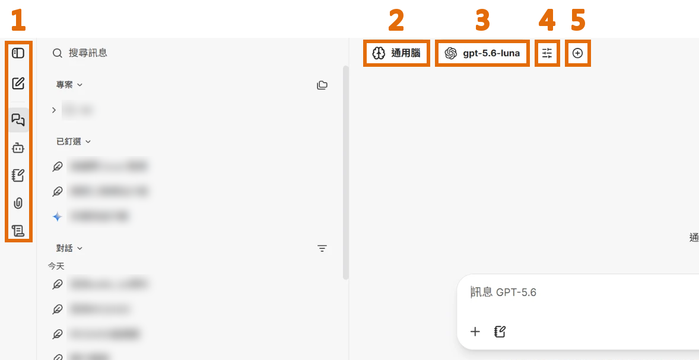
1.1 創建新對話
使用者可點選左側功能列的新對話圖示創建新對話，於對話框中輸入問題或提示內容（1），輸入完畢後點選右下角之送出鍵（2），即可將問題發送至系統；回覆內容可能因使用者選擇的模型而有所不同。
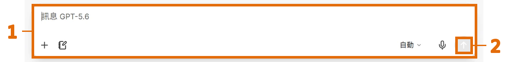
1.1.1 進階設定
使用者可點選畫面上方圖示展開下拉式選單，依據使用情境選取「通用腦」，或於「My Agents」選取先前建立的 Agent；若欲修改回覆模型，可點選模型圖示展開下拉式選單進行修改。
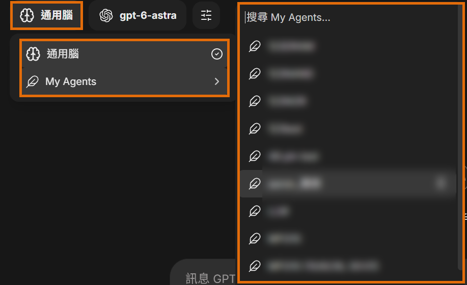
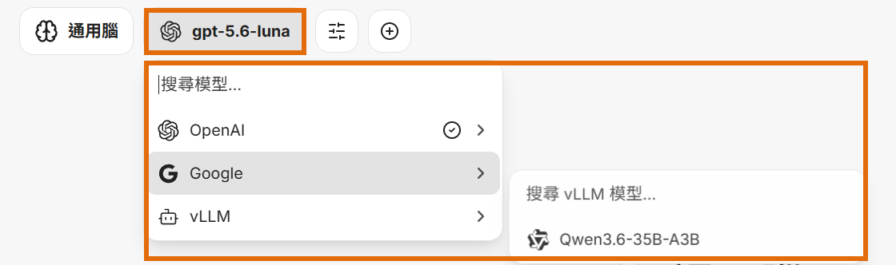
若欲調整模型回覆參數，點選模型參數圖示，畫面中央將彈出「模型參數」視窗以進行調整。
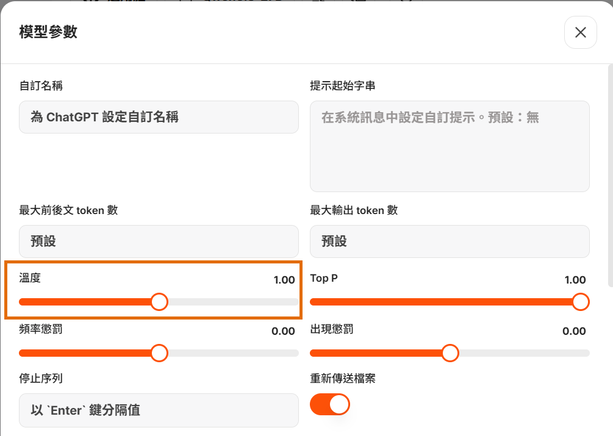
使用者可於「溫度」移動滑桿以設定生成內容的隨機性。數值較低，回答較穩定、保守、重複性較高；數值較高，則回答較有創意、表達方式多樣。請留意，不同模型選擇將影響可調整的參數。
推理功能需在系統中啟用 Responses API 方可運作。啟用後，可依據任務需求調整以下參數，以平衡處理效能與輸出品質：
推理模式：可設為標準或專業。
推理強度：投入的算力與深度。
推理摘要：摘要的內容範圍。
推理脈絡：上下文納入的詳盡程度。
所有參數設置完成後，點選「確認」以儲存。
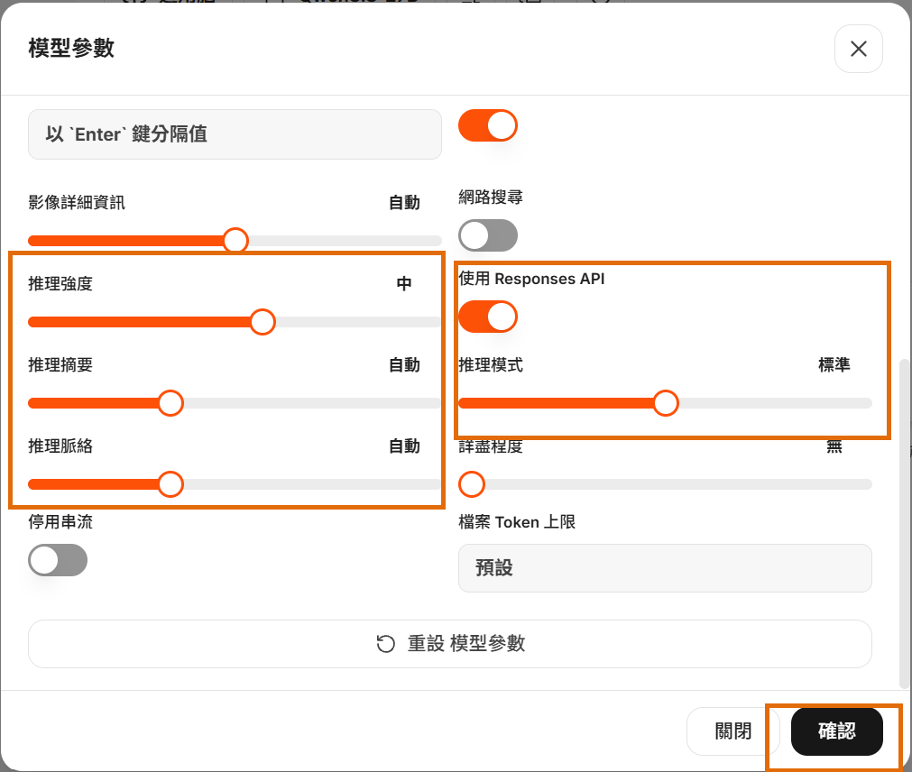
1.1.2 多重對話
為方便使用者比較不同模型對相同 Prompt 的回覆差異，系統提供「新增多重對話」功能。點選該圖示後，即可在單一對話情境內並排檢視各模型的輸出結果。
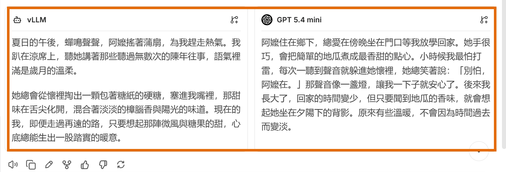
1.2 對話紀錄
使用者可點選左側欄位的聊天紀錄圖示展開側邊欄，檢視過往對話紀錄。側邊欄展開後，點選「所有專案」可顯示現有專案清單；點選專案名稱可查看詳細資訊，若欲進行編輯，亦於此處操作；點選右上角「新增專案」可建立新專案。
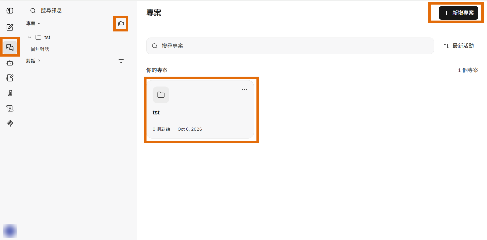
1.2.1 專案管理
點選專案右側的「新增對話」圖示，即可在該專案中新增對話，同一專案下的對話將互相參照，方便使用者集中管理相同主題；點選專案右側「⋯」，即可開啟「編輯專案」視窗，修改專案名稱與描述（選填）後點選「儲存」。
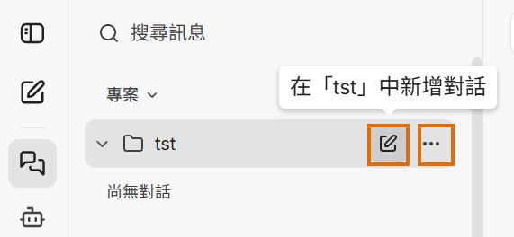
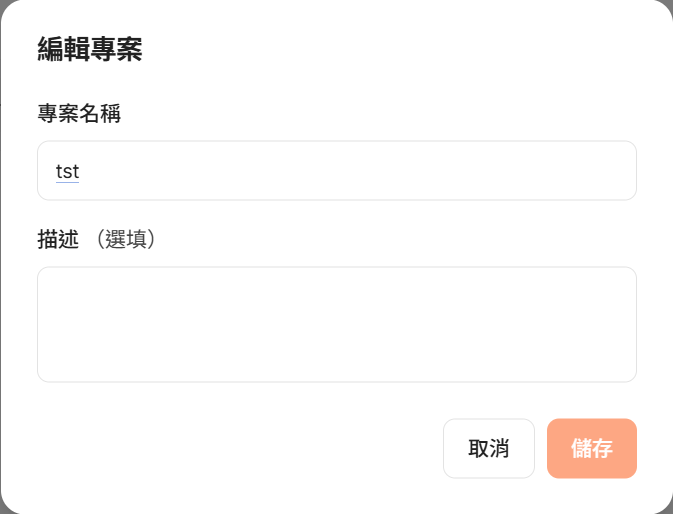
1.2.2 歷史對話
使用者可於側邊欄專案下方檢視所有歷史對話紀錄。點選「對話」右側的篩選圖示（1），開啟「對話清單」選單（2），即可設定顯示、排序與篩選條件，並可勾選「顯示專案對話」；選單右上角提供「重設」。於「顯示」（3）可選擇檢視進行中的對話或封存的對話。
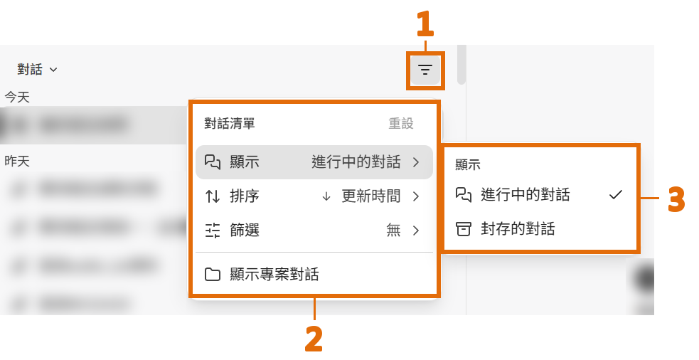
於「排序」可選擇對話排序方式為更新時間、建立時間或標題，並指定順序為最新優先或最舊優先，以快速從大量紀錄中找到所需對話。
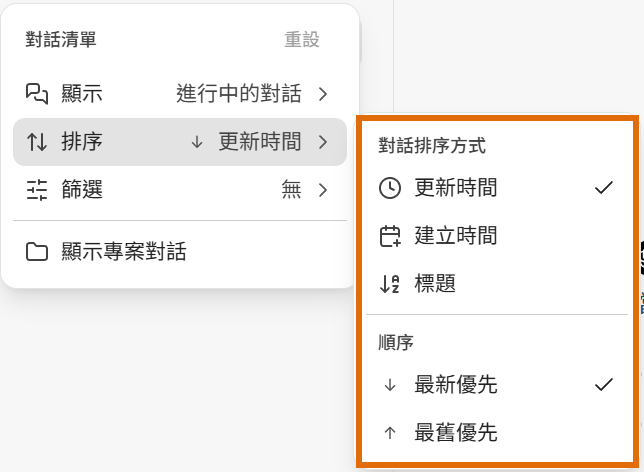
已封存的對話，也可點選左下角的頭像（1），於選單中選擇「封存的對話」（2）查看。
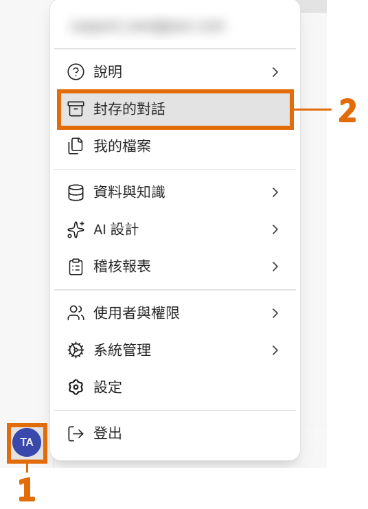
點選後，畫面將彈出「封存的對話」視窗，列出已封存對話的名稱與建立時間，可於上方的搜尋欄（1）尋找對話。「操作」欄提供取消封存對話（2）與刪除對話（3）。
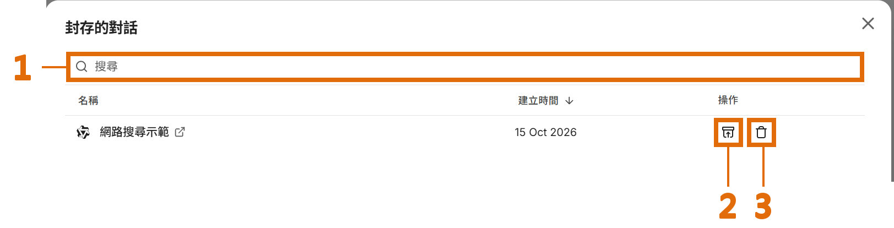
點選任一歷史對話右側的「···」（1），可針對該筆對話進行釘選、重新命名、封存與刪除（2）；釘選的對話會顯示於側邊欄上方的「已釘選」區塊。專案中的對話也有相同的選單。
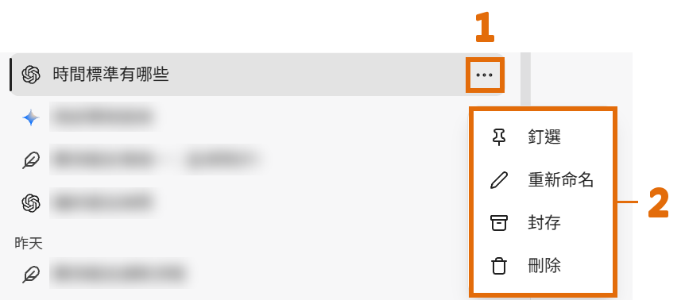
1.2.3 篩選對話
於「對話清單」選單點選「篩選」（1），即可設定篩選條件（2）：可依更新時間、建立時間或端點篩選，或只顯示含有附件、已分享的對話，上方並可搜尋篩選條件。更新時間與建立時間可選擇不限時間、今天、過去 7 天、過去 30 天或去年（3）。點選「清除篩選條件」可清除已設定的篩選。
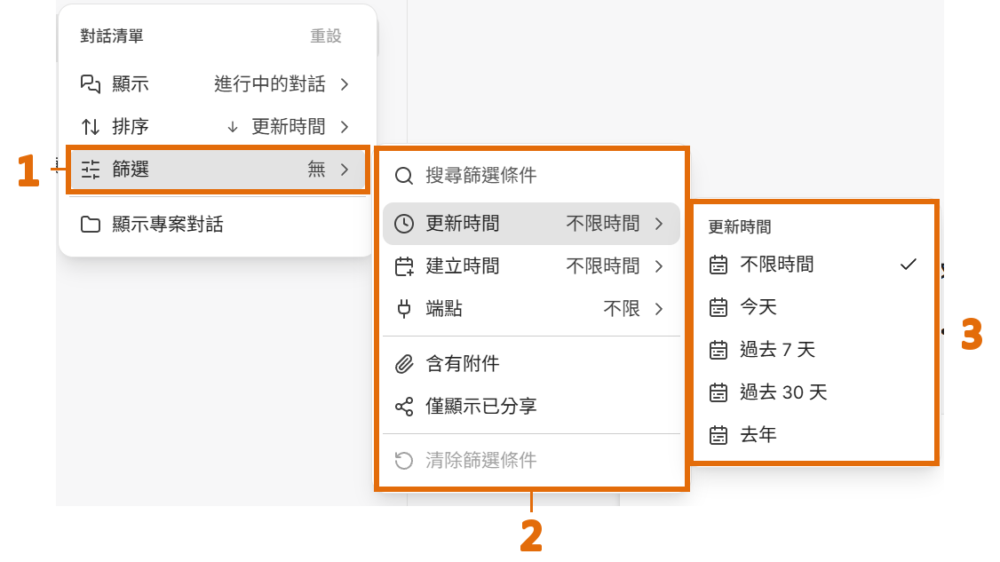
「端點」可選擇 OpenAI、My Agents、Assistants、Google、Anthropic 或 vLLM，只顯示使用該端點的對話。
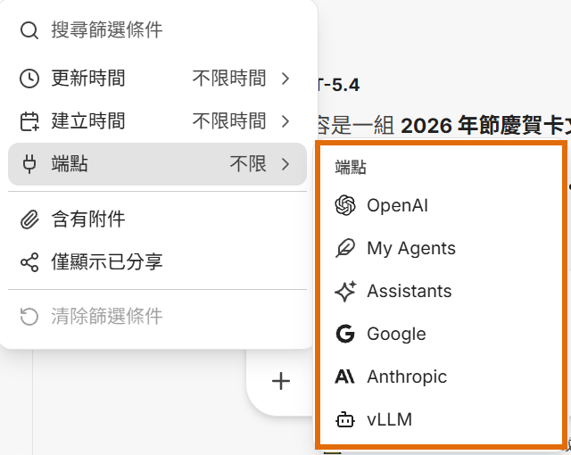
2. Prompts 預設提示詞
「提示詞」用於儲存常用的提示內容，使用時可直接套用，不需每次重新輸入；提示詞中可設定變數，使用時再填入不同內容。
2.1 查看、建立與修改提示詞
使用者可於系統左側欄位點選「提示」，即可展開提示工程頁面。若欲新增提示詞，可點選「＋」號，展開側邊欄建立新提示；若欲編輯現有提示詞，點選欲編輯之項目名稱即可進入編輯頁面。
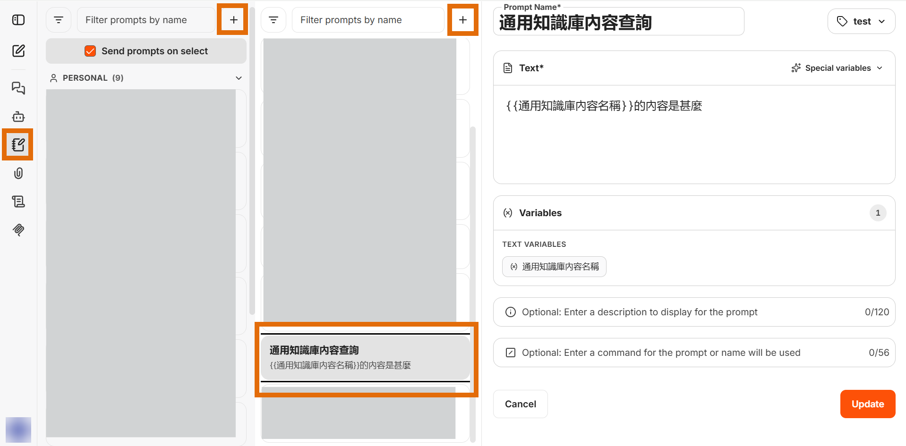
使用者可於右側欄位輸入提示名稱、選擇類別及提示文字。建立提示時，若提示中有需要在使用時變更的內容，可以用雙大括號包住變數名稱，將這些部分標記為變數，系統會自動偵測文字中所有該格式的標記，並在「變數」區列出對應的變數名稱。輸入完成後點選「更新」，以儲存編輯內容。
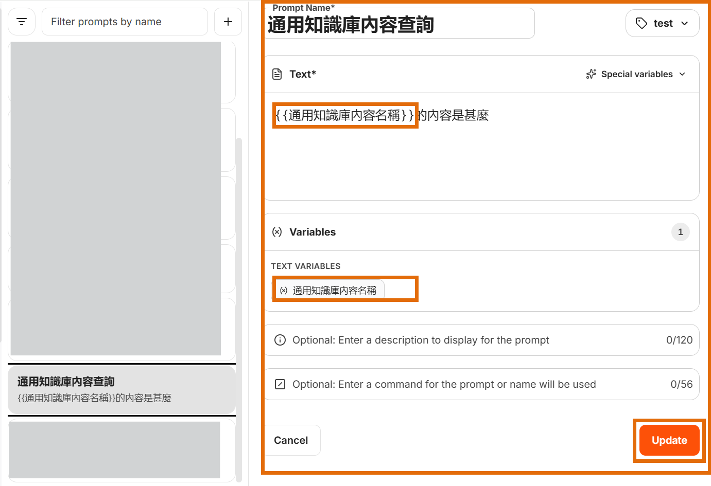
2.2 在對話中套用提示詞
於對話框左下角點選「我的提示」圖示（1），於清單中選擇要套用的提示詞（2）；若提示詞含有變數，填入內容後點選「插入」，提示詞即會帶入對話框。完整操作範例請參閱〈2.3 範例：使用提示詞撰寫商務信件〉。
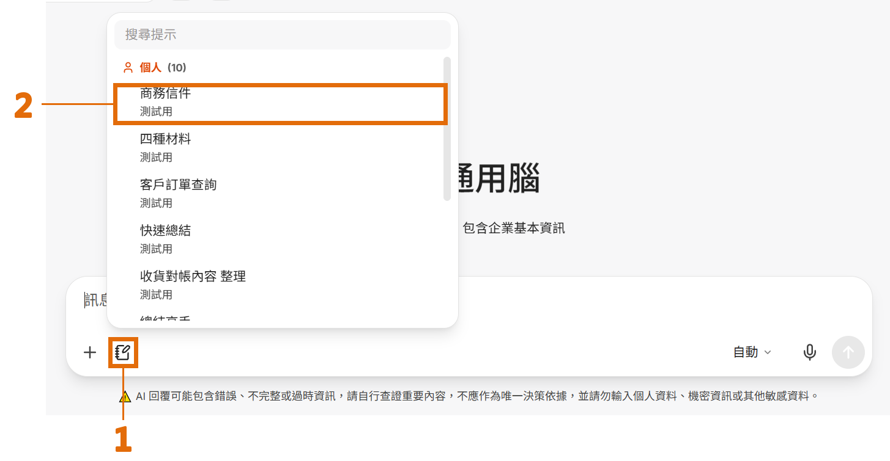
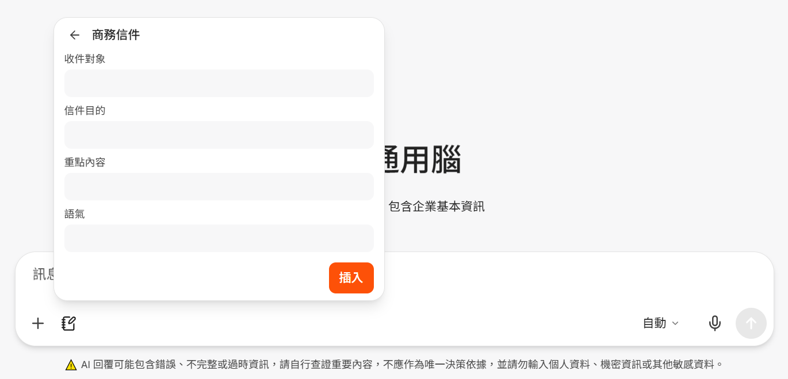
2.3 範例：使用提示詞撰寫商務信件
以下以「商務信件」提示詞為例，說明如何使用含有變數的提示詞。使用者可點選對話框左下角的「我的提示」圖示（2），開啟提示詞清單，點選「商務信件」（1）即可使用。
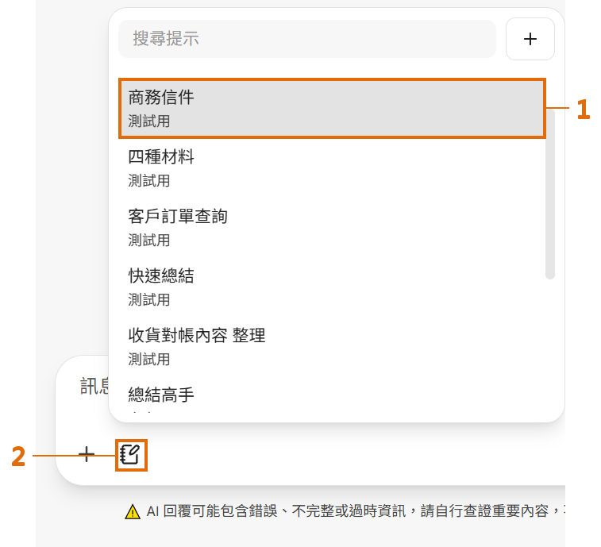
點選後會出現提示詞中的變數欄位，請依序填入「收件對象」、「信件目的」、「重點內容」與「語氣」（1），完成後點選「插入」（2），提示詞即會帶入對話框，使用者可再修改後送出。
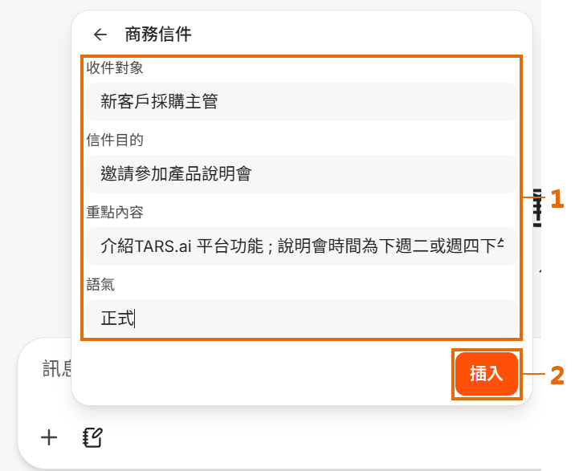
送出後，對話中會顯示帶入的提示詞（1），AI 並依提示詞中指定的格式產出商務信件（2）。
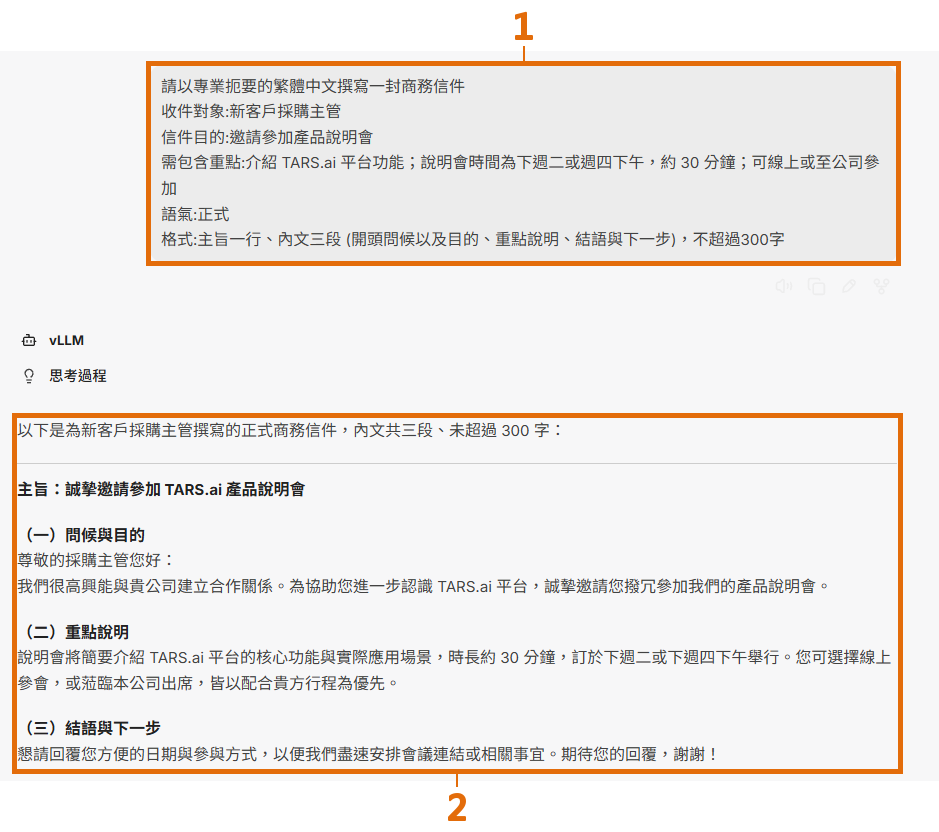
本範例使用的提示詞內容如下，雙大括號中的文字為變數，使用時會出現對應的欄位：
請以專業扼要的繁體中文撰寫一封商務信件
收件對象：{{收件對象}}
信件目的：{{信件目的}}
需包含重點：{{重點內容}}
語氣：{{語氣}}
格式：主旨一行、內文三段（開頭問候以及目的、重點說明、結語與下一步），不超過300字
3. 工具
「工具」用於讓 AI 在對話中執行特定工作，例如搜尋網路、查詢資料庫、執行程式碼等。使用者可於對話框左下角點選「＋」，選擇要使用的工具。
3.1 工具一覽
平台提供的工具與用途如下，各工具的使用方式請參閱以下各節：
網路搜尋：搜尋網路上的最新資訊。
資料庫查詢：查詢綁定的內部資料庫。
知識庫檢索：查詢綁定的內部知識庫。
執行程式碼：撰寫並執行程式碼，以進行計算、資料分析及檔案處理。
檔案搜尋：從附加的檔案中找出相關內容。
技能：依技能設定的步驟與格式完成工作。
成品：將網頁、文件呈現於右側面板。
3.2 開啟工具
使用者可於對話框左下角點選「＋」開啟選單，開啟後「＋」會顯示為「×」（1），點選即可收合選單。選單上方為搜尋列（2），可輸入名稱快速找到工具、技能與伺服器。其下依序分為「附加」（3）、「工具」（4）、「技能」、「MCP 伺服器」與「您的檔案」等區塊，向下捲動即可查看，點選項目即可開啟。「附加」區塊可從本機電腦上傳檔案，或展開「更多上傳選項」（請參閱〈5. 我的檔案（My Files）〉）。
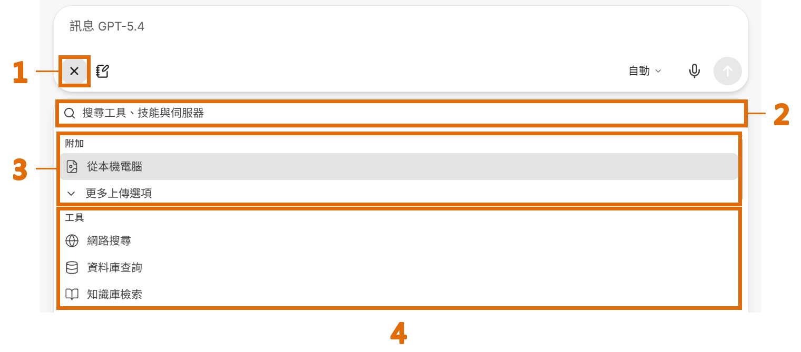
「技能」區塊（1）列出可使用的技能，每一列顯示技能名稱與說明（2），點選即可開啟（請參閱〈4. 技能（Skill）〉）。區塊右側有「顯示全部」（3）。
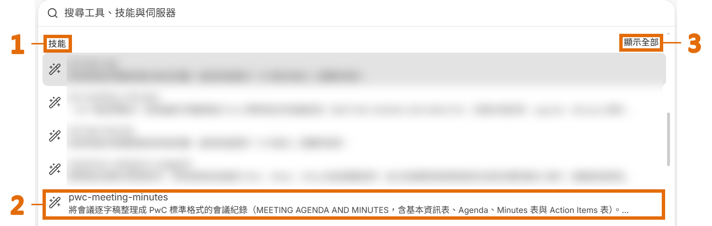
「MCP 伺服器」區塊（1）列出可啟用的 MCP 伺服器。「您的檔案」（2）會列出先前上傳過的檔案，點選即可直接附加至對話，不需重新上傳。這兩個區塊右側同樣有「顯示全部」（3）。點選左側欄的「附加檔案」，也可查看這些檔案，內容與「我的檔案」一致（請參閱〈5. 我的檔案（My Files）〉）。
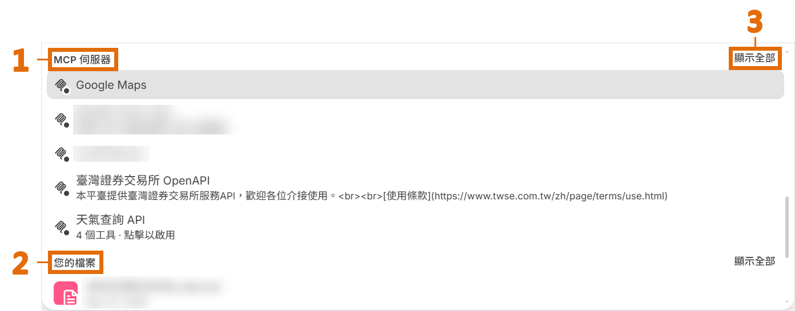
點選工具後，對話框下方會出現該工具的標籤（1），表示已開啟，可同時開啟多個工具。若不需使用，點選標籤右側的「×」（2）即可移除。
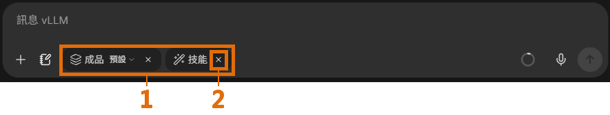
3.3 網路搜尋
「網路搜尋」用於搜尋網路上的最新資訊，例如新聞、市場動態等。使用者可點選「＋」→「網路搜尋」開啟此工具，開啟後對話框下方會顯示「網路搜尋」標籤（1）。
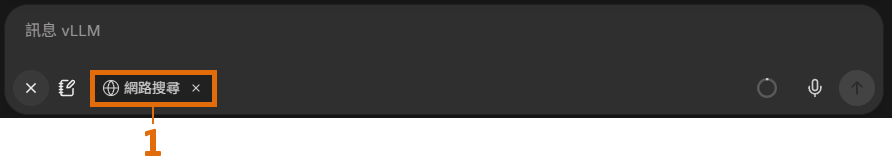
開啟後輸入提示詞（1）並送出，AI 搜尋網路後，回覆上方會顯示「已搜尋網頁」（2），內文各段落後方會標示資料來源網站（3）。
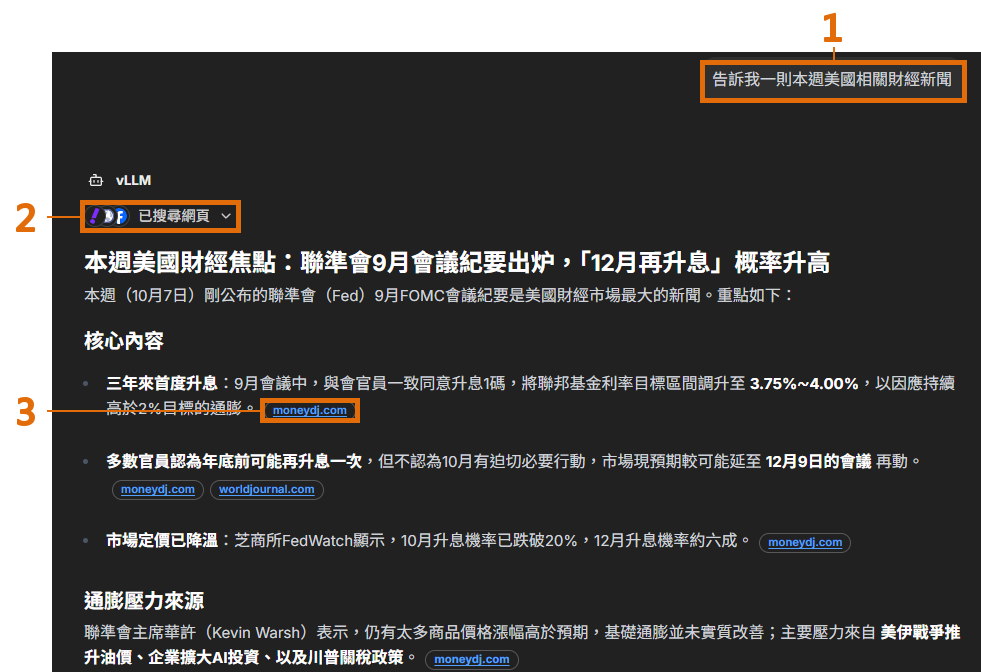
提示詞範例：
告訴我一則本週美國相關財經新聞
3.4 資料庫查詢
「資料庫查詢」用於查詢綁定的內部資料庫。使用者可點選「＋」→「資料庫查詢」開啟此工具，再以文字描述要查詢的內容（1）。
AI 會讀取資料庫結構並執行查詢，回覆上方會顯示執行的操作（2），點選可展開查看各步驟；查詢結果以表格呈現（3）。
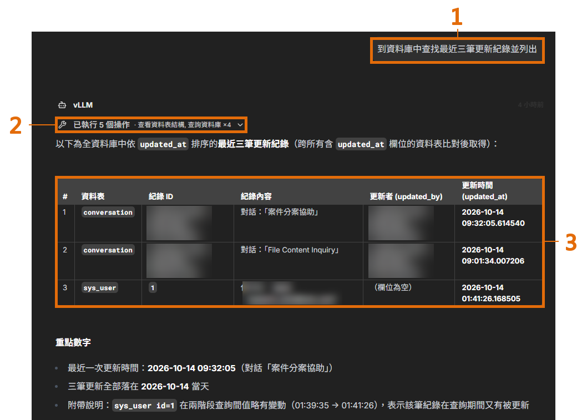
提示詞範例：
到資料庫中查找最近三筆更新紀錄並列出
3.5 知識庫檢索
「知識庫檢索」用於查詢綁定的內部知識庫，並附上來源文件作答。使用者可點選「＋」→「知識庫檢索」開啟此工具後提問（1），AI 檢索知識庫後，回覆上方會顯示「搜尋知識庫」（2），回答最後會列出參考的來源檔案（3）。
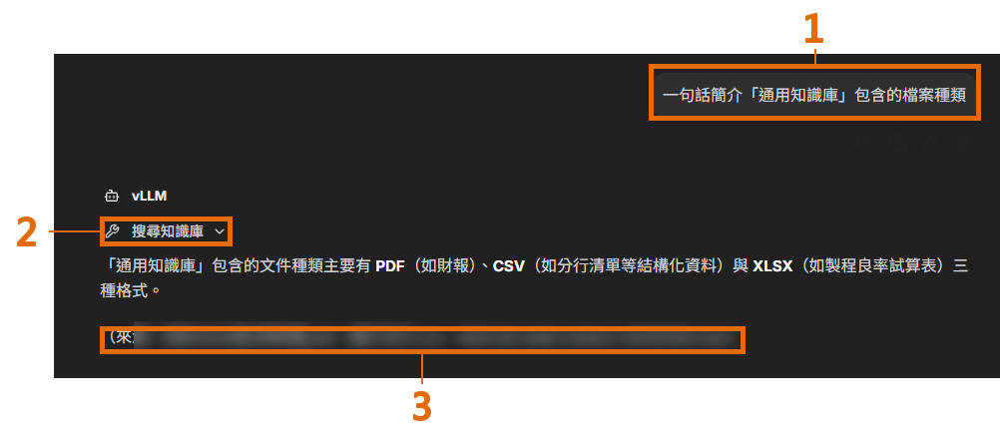
提示詞範例：
一句話簡介「通用知識庫」包含的檔案種類
3.6 執行程式碼
「執行程式碼」用於撰寫並執行 Python 程式碼，以進行計算、資料分析、圖表產生及檔案處理。使用者可點選「＋」→「執行程式碼」開啟此工具，開啟後對話框下方會顯示「執行程式碼」標籤。
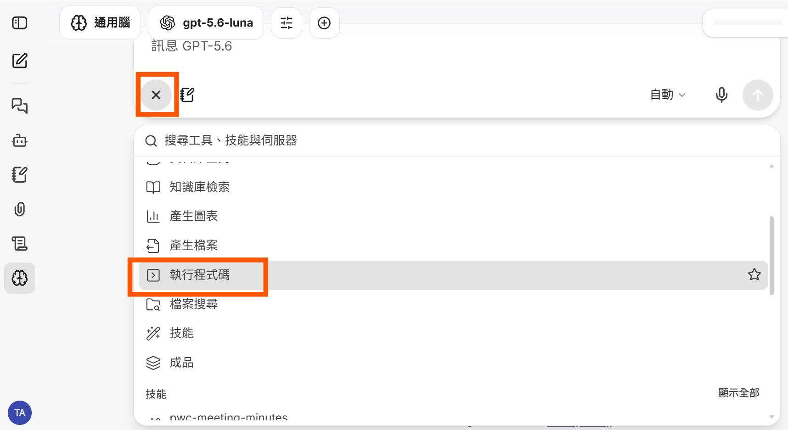
開啟後輸入提示詞並送出，系統會分析使用者需求、自動產生 Python 程式碼，並於安全的沙盒環境中執行。執行結果會回傳至對話中，使用者可查看計算結果、資料分析內容、圖表或處理後的檔案(若需分析或處理檔案，請先將檔案附加至對話中)。
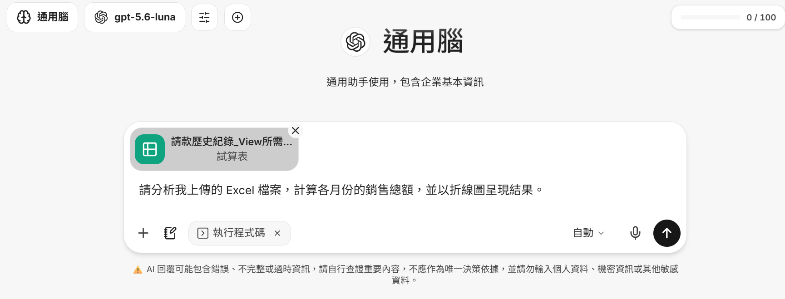
提示詞範例：
請分析我上傳的 Excel 檔案，計算各月份的銷售總額，並以折線圖呈現結果。
3.7 檔案搜尋
「檔案搜尋」適合篇幅較長或多份的檔案，AI 只會讀取與問題相關的段落來回答，可節省 Token。若需要摘要或完整條列整份檔案，請直接附加檔案。
若檔案已上傳，開啟「檔案搜尋」工具即可使用；若檔案尚未上傳，可於上傳時選擇「上傳檔案以供搜尋」（請參閱〈5.4.2 上傳檔案以供搜尋〉）。
開啟後，點選「＋」附加檔案（1），再輸入提示詞（2）；對話框下方顯示「檔案搜尋」（3），即表示已開啟。
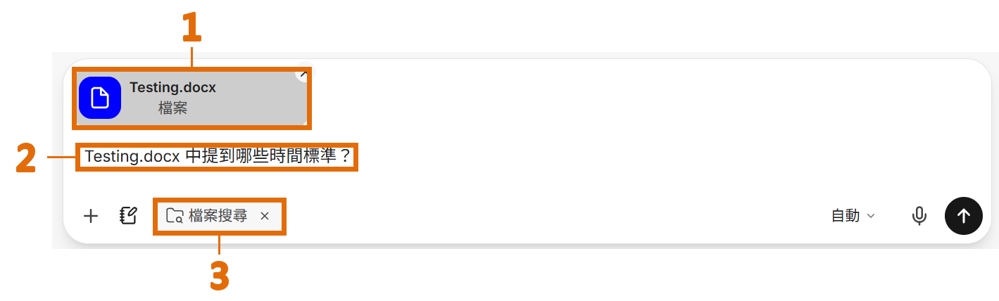
AI 回覆上方會顯示「已搜尋你的檔案」（1），表示已從檔案中搜尋相關內容來回答，同一份檔案可接著追問。
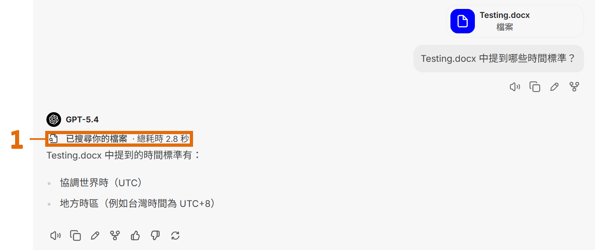
提示詞範例：
Testing.docx 中提到哪些時間標準？
3.8 技能
「技能」用於讓 AI 依技能中設定的步驟與格式完成工作。使用者可點選「＋」→「技能」（1）開啟此工具，選單下方的清單會列出目前可使用的技能（2）。技能的建立方式，請參閱〈4. 技能（Skill）〉。
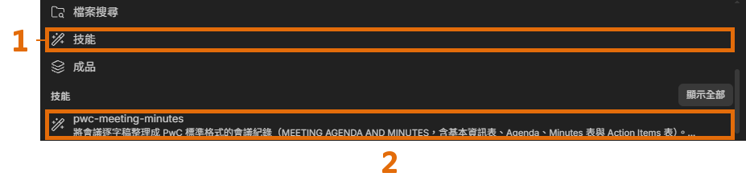
開啟後，AI 會依提示詞自動選用合適的技能。以整理會議紀錄為例，附加會議逐字稿並輸入「請幫我整理這份會議紀錄」（1），回覆會顯示已執行的技能名稱（2）。
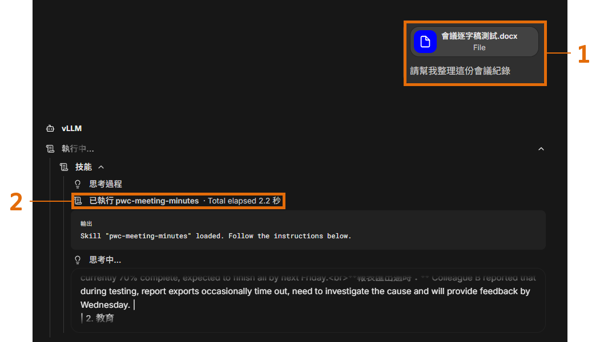
完成後，會議紀錄依技能指定的格式產出，包含基本資訊與議程、會議紀錄與待辦事項。
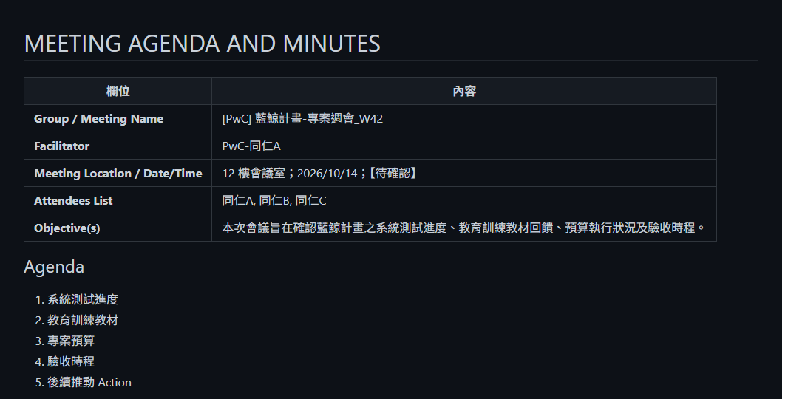
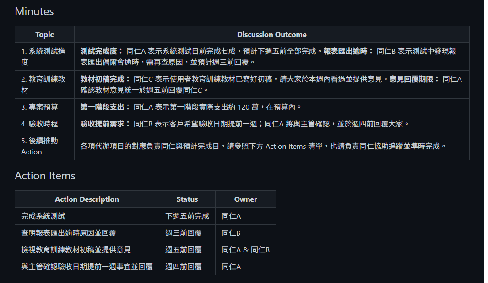
3.9 成品
「成品」用於將網頁、文件等內容呈現於右側面板，可直接瀏覽。開啟「成品」後提出需求（1），回覆中會出現成品（2），點選後右側面板會顯示產出的網頁，可直接瀏覽。
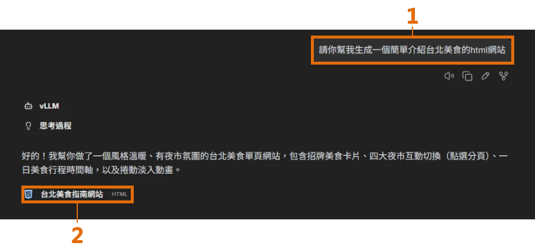
提示詞範例：
請你幫我生成一個簡單介紹台北美食的html網站
4. 技能（Skill）
「技能」是一份可重複使用的作業手冊，記錄某項工作的步驟、格式與範例，供 Agent 在需要時載入使用。
技能由以下四個部分組成：
名稱：技能的識別名稱。
描述：說明技能做什麼、什麼時候使用。
指示：工作的步驟、格式與範例。
附件：範本、程式等（選用）。
技能建立一次即可供多個 Agent 共用，例如「會議紀錄格式」可同時給週會助理、專案助理使用；公司格式改版時，只需修改技能，使用該技能的 Agent 皆會同步套用。
說明、技能與提示詞的差異如下：
說明（Agent）：就像職務說明書，於該 Agent 的每次對話中生效，只適用於單一 Agent，適合放角色、流程與規則。
技能（Skill）：就像作業手冊，需要時才載入，可跨 Agent 共用，適合放格式標準、範例與範本。
提示詞：就像常用訊息範本，於使用者點選送出時生效，適合放常問的問題與固定請求。
AI 可參考的資訊來源如下；需要每次遵守的格式與規則，適合寫成技能：
對話紀錄：就像開會筆記，只在這次對話中保存，適合當次的討論與提問，只有自己可以使用。
知識庫：就像公司文件櫃，長期保存，依提問找出最相關的內容，有權限的同仁可以使用。
說明／技能：就像作業手冊，長期保存且每次生效，每次照同樣規則執行，Agent 的使用者可以使用。
工具／資料庫：就像公司系統，長期保存，查詢結果每次一致，所有人皆可使用。
4.1 進入技能頁面
使用者可於系統左側欄位點選「技能」圖示（1），即可查看目前已建立的技能；技能較多時，可於上方「依名稱篩選技能」欄位（2）輸入名稱快速尋找。
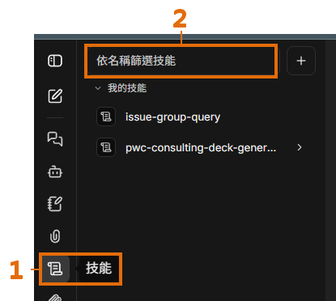
點選清單中的技能（1），右側即會顯示該技能的名稱與描述（2），以及技能指示的內容（3）。
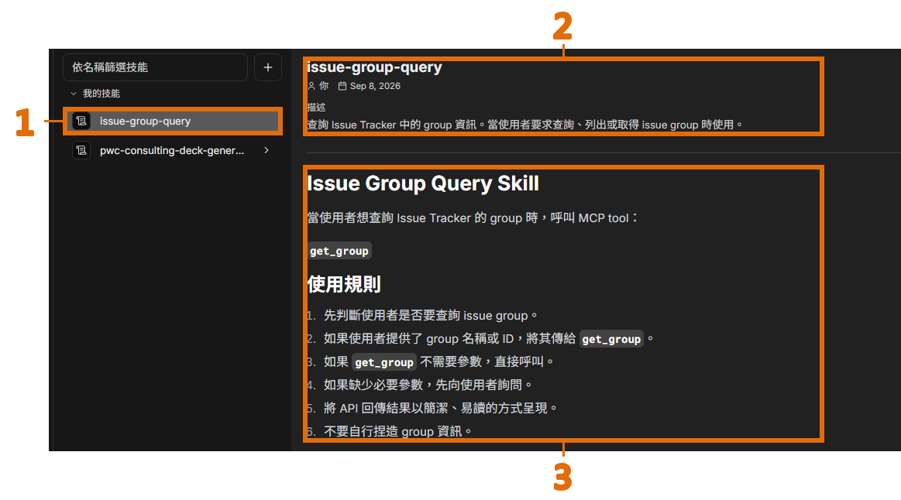
含附件的技能，名稱右側會顯示「＞」，點選即可展開（1），檢視技能包含的檔案（2），例如 SKILL.md 與附件資料夾。
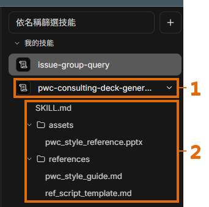
4.2 建立技能
點選技能面板右上角的「＋」（建立技能），可選擇「撰寫技能指示」或「上傳技能」兩種方式建立技能（1）。
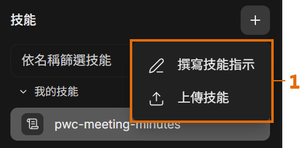
撰寫技能指示
點選「撰寫技能指示」後，於視窗中依序輸入「名稱」（1）、「描述」（2）及「指示」（3），完成後點選「建立」（4）即可。
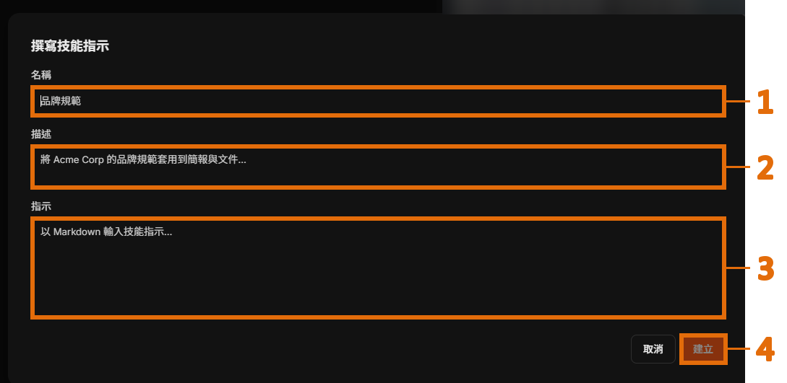
名稱限小寫英文字母、數字與連字號，不可使用中文；輸入中文時，欄位下方會出現紅字提示「只能使用小寫英文字母、數字與連字號（kebab-case）」（1），請改用英文命名。
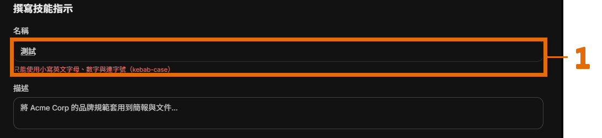
上傳技能
點選「上傳技能」後，將檔案拖放至視窗中，或點選視窗以選取檔案（1），即可上傳。視窗下方列有檔案需求（2），說明如下：
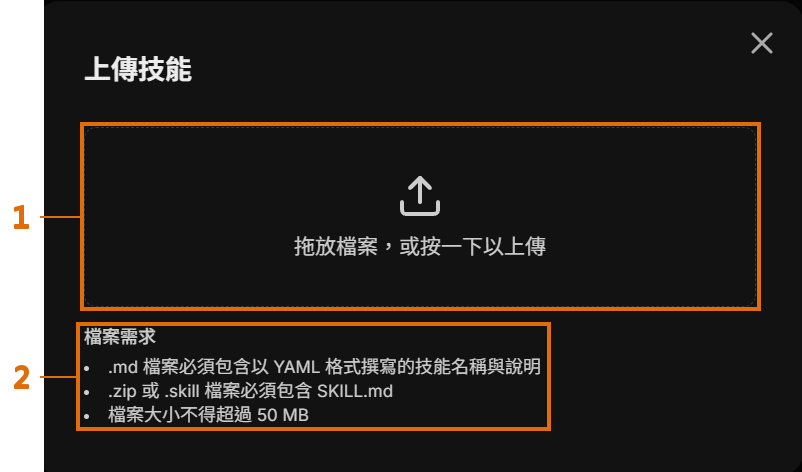
.md 檔案：必須包含以 YAML 格式撰寫的技能名稱與說明。
.zip 或 .skill 檔案：必須包含 SKILL.md；若技能需搭配範本或程式，可將其與 SKILL.md 置於同一資料夾後一併壓縮上傳。
檔案大小：不得超過 50 MB。
SKILL.md 檔案最上方必須以 YAML 格式寫明技能名稱與說明，不可省略；存檔時請確認檔名為 SKILL.md，不可變成 SKILL.md.txt。寫法請參閱〈4.3 技能範例：會議紀錄格式〉。
4.3 技能範例：會議紀錄格式
技能「pwc-meeting-minutes」將會議逐字稿整理成公司標準格式的會議紀錄，並內附公司會議紀錄範本，套用技能後，AI 產出的會議紀錄格式與公司範本一致，下圖左為公司範本，右為 AI 依會議逐字稿產出的會議紀錄。
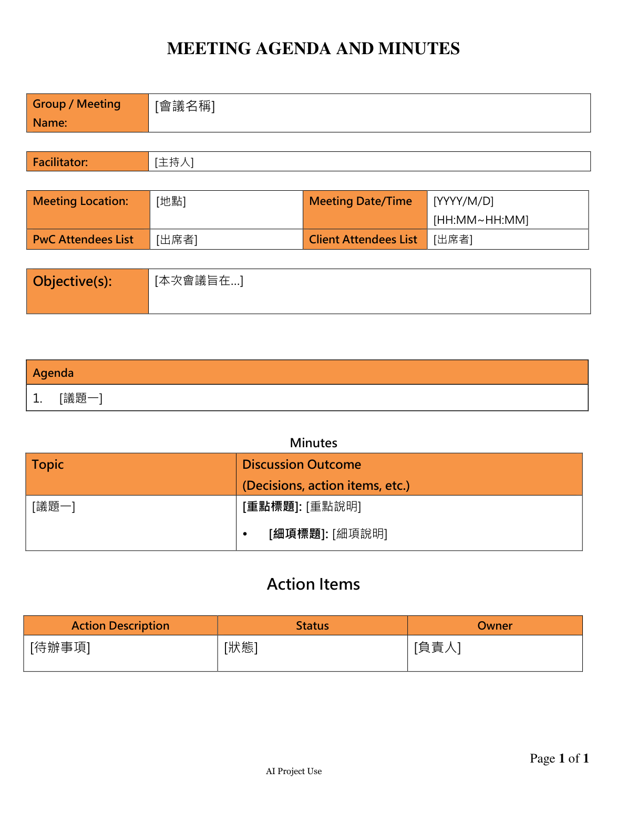
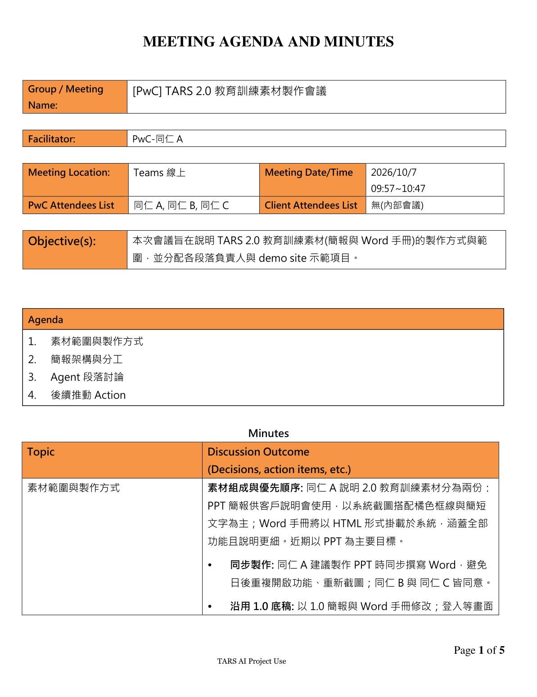
此技能的 SKILL.md 依用途可分為以下段落，可作為撰寫技能時的參考（完整內容請參閱附錄）：
（1）名稱與描述：即 YAML 格式的標頭，必須置於檔案最上方，以兩行「---」框起，分別寫明「name:」（技能名稱）與「description:」（技能描述），AI 依描述判斷何時使用此技能。欄位名稱與冒號須使用半形英文，冒號後空一格，例如「name: pwc-meeting-minutes」。name 只能使用小寫英文、數字與「-」，最多 64 個字元，且不可與自己的其他技能重複；description 上限為 1,024 個字元，建議控制在 250 個字元內，過長的部分在 AI 看到的技能清單中會被截斷。
（2）角色與目標：說明此技能要完成的工作。
（3）作業步驟：依序列出處理流程，屬於「指示」。
（4）輸出格式：列出會議紀錄各區塊的內容與寫法，屬於「標準」。
（5）重點寫法與範例：以原文與整理後的對照，說明重點的寫法，屬於「標準」。
（6）常見錯誤：列出常見的錯誤寫法與建議改法，屬於「注意事項」。
（7）待辦事項寫法：說明待辦事項各欄位的寫法，屬於「標準」。
（8）輸出方式：說明產出檔案的方式，對應 Agent 的工具設定。
（9）檢查清單：輸出前逐項確認的項目。
5. 我的檔案（My Files）
「我的檔案」（英文介面為「My Files」）用於集中管理使用者在對話中上傳過的檔案。在對話中附加的檔案會自動保存於「我的檔案」，之後可直接再次附加至對話，不需重新上傳。
5.1 進入我的檔案
使用者可於左下角點選頭像（2），在選單中點選「我的檔案」（1），即可開啟「我的檔案」視窗。
亦可點選左側欄「附加檔案」（1），查看已上傳的檔案；點選下方「管理檔案」（2），即可開啟「我的檔案」視窗。
5.2 查看與搜尋檔案
開啟後，視窗會列出所有上傳過的檔案。於「篩選檔案」欄位（1）輸入檔案名稱的關鍵字，即可快速找到檔案；點選欄位名稱旁的圖示（2），可依該欄位排序。
點選右側的「欄位設定」按鈕（1）後，可勾選或取消勾選要顯示的欄位（2）。
5.3 刪除檔案
於「我的檔案」視窗中勾選欲刪除的檔案（2），再點選左上角的「刪除」（1）。點選後，系統會直接刪除檔案，不會再次確認，刪除前請再次確認勾選的檔案。
5.4 上傳檔案
5.4.1 從本機電腦
「我的檔案」中的檔案，來自使用者在對話中附加的檔案。使用者可於對話框左下角點選「＋」（1），再點選「從本機電腦」（2），於檔案總管選擇檔案後點選「開啟」；上傳後，檔案會自動保存於「我的檔案」。
5.4.2 上傳檔案以供搜尋
「上傳檔案以供搜尋」適合篇幅較長或多份的檔案。以此方式上傳後，AI 只會讀取與問題相關的段落來回答；以「從本機電腦」上傳時，AI 會讀取整份檔案。
使用者可於對話框左下角點選「＋」，再點選「更多上傳選項」（1）。
展開後點選「上傳檔案以供搜尋」（2），於檔案總管選擇檔案後點選「開啟」。
兩種方式上傳的檔案，都會完整保存於「我的檔案」；之後再次使用時，可依需求決定是否開啟「檔案搜尋」（請參閱〈5.5 在對話中使用檔案〉）。
5.5 在對話中使用檔案
已上傳的檔案可直接再次附加至對話。使用者可於對話框左下角點選「＋」，在選單下方的「您的檔案」中點選檔案（1），即可附加至對話，不需重新上傳。
附加後，檔案會顯示於對話框上方（1）；若同時開啟「檔案搜尋」（2），AI 只會讀取與問題相關的段落，未開啟時，AI 會讀取整份檔案（請參閱〈3.7 檔案搜尋〉）。
6. 代理建構器（Agent）
「代理建構器」用於建立 AI 助理（Agent），使用者可在此預先設定 Agent 的模型、說明、工具與技能。建立完成後，使用者只需選擇該 Agent 並提供本次要處理的資料，Agent 即會依照設定的流程與格式完成任務。
一般對話每次都要重新說明任務、格式與規則，參考檔案也要重新上傳或選取，回覆品質取決於當下的提示詞，同樣的需求每次結果可能不同。Agent 則是事先設定好說明、工具與技能的 AI 助理，開新對話也不用重新交代，只需提供要處理的內容（例如逐字稿、發票照片），每次即依相同流程與格式完成任務。
一般對話與 Agent 的差異如下：
模型、工具、說明：一般對話每次自己挑、自己交代；Agent 事先設定好，選了就能用。
規則與輸出格式：一般對話每次在對話裡重寫；Agent 寫在說明裡，每次都生效。
可用的工具：一般對話可能一次開很多；Agent 只放這個任務需要的，較不會選錯。
參考資料：一般對話每次重新上傳；Agent 綁在 Agent 上。
結果一致性：一般對話看使用者怎麼問，差異大；Agent 條件固定，結果較一致。
分享與改進：一般對話難以複製、難以重現；Agent 建一次可供全部門共用，並可用固定案例測試。
Agent 由以下四個部分組成，以「會議紀錄彙整助理」（使用者上傳會議逐字稿，Agent 自動整理成公司標準格式的會議紀錄）為例：
模型（大腦）：負責理解與判斷，依任務選擇地端或雲端模型。例如提供者選 vLLM（地端模型），溫度設 0.2，讓每次產出格式一致。
說明（職務說明書）：定義角色、步驟、規則與輸出格式，每次對話都生效。例如確認逐字稿、產出初稿、使用者確認、產出 Word。
工具（手腳）：讓 Agent 能執行工作，例如檔案搜尋、網路搜尋、執行程式碼。例如以檔案搜尋讀取逐字稿，以執行程式碼輸出 Word。
知識與技能（參考資料與作業手冊）：知識庫提供內容；技能提供可共用的作業標準。例如技能「會議紀錄格式標準」。
6.1 進入代理建構器
使用者可於系統左側欄位點選「代理建構器」圖示，即可開啟代理建構器面板。
6.2 頁面功能簡介
代理建構器上半部可設定 Agent 的頭像、名稱與描述（1）、模型（2）、說明（3）與對話起點（4）。
下半部可新增工具（5）、設定技能（6）、上傳檔案內容（7）與進階設定（8），完成後點選「建立」（9）。請注意，新建立的 Agent 預設沒有工具，需自行新增（請參閱〈6.7 新增工具〉）。
6.2.1 進階設定
點選面板下方的「進階」，即可設定「Agent 最大步驟數」（1），也就是 Agent 完成一次任務時最多可執行的步驟數，欄位預設為「跟隨系統設定」。滑鼠移至「？」圖示可查看說明（2）：預設為 25 步，每次 AI 請求或一輪工具使用都算一步。一般使用者若無特別需求，可維持預設值。
6.3 建立 Agent
點選左側的「＋」圖示可上傳 Agent 的頭像圖片（1），並輸入 Agent 名稱（2）（必填）與描述（3）（選填）。名稱與描述將顯示於 Agent 清單中，建議清楚說明用途與適用對象，例如名稱「會議紀錄彙整助理」。
點選「模型」欄位，即可開啟「模型參數」視窗。請先於「提供者」下拉式選單選擇供應商（1），再於「模型」下拉式選單（2）選擇欲使用的模型，選擇後視窗將顯示該模型可調整的參數（參數說明請參閱〈6.6 設定模型參數〉）。
於「說明」欄位輸入 Agent 使用的系統指令，說明內容於此 Agent 的每次對話中皆會生效。點選欄位右上角的「⊕」圖示（1），可於選單中選擇目前日期、目前使用者等變數（2）插入說明中，對話時系統會以實際的日期、時間或使用者名稱取代。說明的寫法請參閱〈6.5 說明撰寫範例〉。
6.4 設定技能
於「技能」選擇 Agent 使用技能的方式，各選項（1）（2）（3）說明如下（技能的建立請參閱〈4.2 建立技能〉）：
關閉：此 Agent 不使用技能。
全部：Agent 可使用目前所有可用的技能，並依各技能的描述自行判斷是否使用。
已選取：Agent 僅使用指定的技能；需固定輸出格式的 Agent，建議選擇此方式。
選擇「已選取」後，即可開啟「技能」視窗，點選欲套用的技能即可加入（2）；技能較多時，可輸入名稱搜尋（3），或依分頁篩選（4）。若尚未建立所需的技能，可點選視窗左上角的「＋」（1），直接建立新技能。
加入後，所選取的技能會列於「技能」下方（2），點選右側「×」可移除；如需加入其他技能，可點選「技能」右側的「＋」（1）。
6.5 說明撰寫範例
說明建議依「角色」（你是誰、負責什麼）、「任務流程」（依序要做哪些事）、「規則」（什麼不能做）及「例外處理」（遇到問題怎麼辦）四個段落撰寫。以下為「會議紀錄彙整助理」的說明範例，可直接貼入「說明」欄位：
# 角色
你是「會議紀錄彙整助理」，負責把會議逐字稿整理成公司標準格式的會議紀錄。
# 任務流程
1. 確認輸入：檢查使用者是否已上傳逐字稿。沒有逐字稿時，請使用者上傳，不要自行編寫會議內容。
2. 確認基本資訊：從逐字稿找出會議名稱、日期、時間、地點、主持人、出席者；找不到的欄位，一次列出來請使用者補充。
3. 產出初稿：使用技能 pwc-meeting-minutes，依其格式規範產出完整會議紀錄。
4. 請使用者確認：初稿後請使用者確認，需要修改時只修改指定段落。
5. 產出檔案：使用者回覆 OK 後，產出 Word 檔。
# 規則
- 內容只能來自逐字稿，不得補上逐字稿中沒有的人名、日期、數字或決議。
- 使用繁體中文書面語，不保留口語贅字。
# 例外處理
- 無法判斷負責人、日期或狀態 → 標【待確認】並完成其餘內容。
- 沒有逐字稿或檔案無法讀取 → 說明狀況並詢問使用者。
6.6 設定模型參數
點選代理建構器的「模型」欄位，即可開啟「模型參數」視窗，完成設定後點選「確認」即可儲存。一般使用者建議只調整提供者與模型（1）、溫度（2）與推理強度（3），其他參數維持預設值即可。
於「提供者」與「模型」下拉式選單中，選擇您欲使用的模型。
使用者可於「溫度」移動滑桿以設定生成內容的隨機性。數值較低，回覆較穩定、保守、可預期；數值較高，則回覆較有創意、表達方式多樣。會議紀錄、報表等格式固定的任務，建議設定於 0～0.3。
使用者亦可於「推理強度」移動滑桿以設定模型回答前的思考深度。數值較低，回應速度較快；數值較高，回答較周全，但速度較慢、成本較高。一般問題建議維持「自動」。
點選「重設 模型參數」可將所有參數恢復為預設值。
6.7 新增工具
點選「工具」右側的「＋ 新增」，即可開啟「工具庫」視窗。使用者可於左側依分類篩選（1），或於上方「搜尋工具…」欄位（2）輸入工具名稱。點選欲使用的工具後，該工具卡片右上角會出現勾選圖示（3），即表示已加入 Agent；關閉工具庫後，代理建構器的「工具」下方會列出已加入的工具與數量。
各工具的功能說明，可於工具庫中的工具卡片上查看（亦可參閱〈3. 工具〉）。建議僅加入任務所需的工具；加入過多工具，可能使 Agent 選錯資料來源。
6.8 使用 Agent
點選對話頁面左上角的選單（1）（顯示目前使用中的通用腦或 Agent 名稱），於下拉式選單中點選「My Agents」（2），即可看到已建立的 Agent 列表，選擇欲使用的 Agent（3）即可。
選擇 Agent 後會開啟新對話，左上角會顯示使用中的 Agent（1），畫面中央顯示該 Agent 的名稱與描述（2），於對話框輸入訊息（3）即可開始使用。如需切換回一般對話，於同一選單點選「通用腦」即可。
7. 記憶
7. 記憶
「記憶」功能可協助系統記錄使用者在對話中表達的特殊偏好或使用習慣，並於後續使用「通用腦」或 Agent 進行對話時，提供更符合個人需求的回覆。
記憶功能以個人帳號為單位進行管理，使用者可依需求選擇是否開啟。開啟後，系統會透過大語言模型分析使用者每次輸入的 Prompt，判斷其中是否包含值得保留的個人偏好或使用習慣。符合條件的內容將自動新增至「記憶」清單，使用者亦可自行新增、編輯或刪除記憶內容。
7.1 記憶功能簡介
記憶功能主要提供以下用途：
記錄使用者的個人偏好與使用習慣。
於後續對話中參考已儲存的記憶內容。
讓通用腦或 Agent 提供更符合使用者需求的回覆。
由使用者自行檢視、修改、新增或刪除記憶。
由使用者依個人帳號需求選擇是否啟用記憶功能。
例如，使用者在對話中輸入「我偏好使用正式的商務文件語氣」，系統可能會將此內容判斷為使用者偏好，並自動儲存至記憶中。未來使用者要求撰寫商務文件時，系統便可能參考此項偏好進行回覆。
7.2 開啟或關閉記憶功能
透過「記憶模式」可依個人帳號需求自由選擇：自動更新、手動更新、關閉。
「自動更新」會由大語言模型自動分析對話內容，判斷是否包含使用者的特殊偏好或使用習慣，並自動新增或更新記憶，且於後續回覆時參考相關內容；「僅手動更新」不會自動新增或修改記憶，使用者需於「個人記憶」功能中自行新增或編輯記憶，但系統仍會於對話回覆時參考已儲存的記憶；「關閉」則不會再從對話內容建立或更新記憶，後續回覆也不會參考個人記憶。
7.3 記憶清單
使用者可由左側功能列點選「記憶」圖示，進入「個人記憶」管理畫面。
進入後，畫面左側會顯示個人記憶清單，右側則可顯示目前個人帳號的記憶詳細內容。
畫面主要區域說明如下：
（1）「記憶」功能圖示：點選後進入個人記憶管理畫面。
（2）搜尋欄位：輸入關鍵字，以篩選符合條件的記憶內容。
（3）記憶分類選單：可依畫面提供的分類條件篩選記憶，例如「所有記憶」。
（4）記憶清單：顯示已儲存的記憶內容、記憶類型與建立或更新時間。
（5）「＋」按鈕：新增一筆記憶。
（6）清除所有記憶：刪除目前帳號下已儲存的記憶內容。
（7）編輯記憶記錄：手動修改記憶的內容。
7.4 查看記憶內容
進入「個人記憶」畫面後，系統會以清單方式顯示目前帳號下已儲存的記憶。
每一筆記憶通常會顯示以下資訊：
記憶內容摘要、記憶類型(例如「偏好」或「需求」)。
另外，點選「前往來源對話」，可查看該筆記憶是透過哪個對話被記憶下來。
7.5 注意事項
記憶功能以個人帳號為單位進行管理。
開啟記憶功能後，系統會透過大語言模型判斷 Prompt 是否包含特殊偏好或使用習慣。
並非每一次輸入的 Prompt 都會被建立為記憶。
記憶內容可能影響後續通用腦或 Agent 的回覆方式。
若記憶內容已過時，建議定期檢視並進行編輯或刪除。
請勿將密碼、驗證碼、信用卡資料或其他高度敏感資訊儲存於記憶中。
關閉記憶功能後，系統不會再記憶使用者在對話中的特殊偏好或使用習慣。
清除所有記憶前，請確認是否仍需要保留相關內容。
AI 回覆可能受到記憶內容影響，使用者仍應確認回覆是否符合當次需求。
8. 資料與知識
8.1 知識庫清單
「知識庫清單」用於管理與建立知識庫，使用者可在此快速搜尋、建立或進入各個知識庫 。先於畫面左下角點選頭像，在選單中點選「資料與知識」展開子選單後，再點選「知識庫清單」以進入該頁面。
進入此頁面後，您將會看到所有已建立的知識庫，使用者可於左上角快速查詢欲查看的知識庫。
已建立的知識庫會於該名稱下方顯示該知識庫目前綁定的模型、描述、各類資料源狀態以及資源使用現況，方便使用者查看。
8.1.1 建立知識庫
點選左上角的「＋新增知識庫」後會開啟建立知識庫的視窗，即可建立新的知識庫。
開啟視窗後，使用者可依序輸入知識庫名稱、最大檢索數量、描述，同時選擇欲使用的LLM / Embedding/ Reranked 模型，以及自訂標籤和欲上傳的初始檔案，檔案亦可於知識庫建立後再上傳。
基礎設定填寫完畢後，使用者可進行權限設定，權限分為「管理權限」及「聊天使用權限」兩個區塊，且皆可分別指派給個人或群組。
被賦予管理權限的使用者或群組，可對知識庫進行管理與維護作業，包括新增或刪除檔案、調整模型與參數設定，以及刪除知識庫等操作；被賦予聊天使用權限的使用者或群組，則可於對話中連結並使用該知識庫所包含的內容。
完成上述所有設定後後點擊「儲存」，將該知識庫新增至知識庫清單，後續可在知識庫中上傳資料至該資料庫。
8.1.2知識庫設定
若要針對特定知識庫建立提示詞，可點擊該知識庫右上角黃色書本圖示，點擊後將進入提示詞建立頁面，後續步驟請參考〔4.1 查看、建立與修改提示詞〕
如需編輯該資料庫，請點選該知識庫右上角黑色鉛筆圖示，系統會開啟該知識庫的編輯視窗，使用者可在此修改知識庫名稱、描述與權限相關設定，完成編輯後請點選「儲存」以更新設定。
如需刪除該資料庫，請點選該知識庫右上角紅色垃圾桶圖示，系統會開啟該知識庫的刪除視窗，如確定刪除該知識庫，請點選「刪除」，請注意若刪除該資料庫將一併移除關聯的文件與資料集。
於知識庫清單中，點擊欲查看的知識庫，即可進入該知識庫的詳細頁面，執行進一步的操作。進入該知識庫的詳細頁面後，由左至右依序為文件、網站、SQL資料庫、文檔群組、排程維護、資料分級，以下將依序介紹：
文件
在文件介面中，點及右上方「+上傳文件」可開啟「上傳文件」視窗。開啟後，請點選【Choose Files】，自本機選取欲上傳至資料庫的文件，本系統支援的檔案格式包括：TXT, PDF, DOCX, PPTX, PPT, CSV, MARKDOWN, RTF，一次最多可上傳五筆文件。同時，使用者可依需求決定是否開啟圖片辨識功能，以及設定資料等級，資料等級分為高機密、機密與不設定（普通）。
完成新增後，請點選「上傳」，上傳完畢後新的資料會出現在該知識庫的文件列表中，使用者可進行後續處理與操作。
使用者可透過檔案列表右側的功能管理已上傳文件。系統提供「文件詳細資料」、「片段」、「重新命名」、「設定資料等級」、「重新處理」及「刪除」等功能。其中，文件詳細資料可查看文件相關資訊；片段功能可檢視文件切分後的內容；重新命名可調整文件名稱；資料分級可設定網站內容的資料等級；重新處理可重新執行文件解析與索引；刪除功能則可將文件自知識庫中移除。
網站
在網站介面中，點擊右上方「+匯入網站」可開啟「匯入網站」視窗。開啟「匯入網站」視窗後，請於名稱欄位輸入網站名稱，於網址欄位填入欲匯入的網站 URL，並視需要描述於欄位補充網站相關說明。若希望網站內容於匯入完成後立即提供搜尋與問答使用，可開啟選項。完成設定後，請點選「匯入」。
系統將自動擷取網站內容，並完成切片（Chunk）與向量化處理，此過程可能需要數分鐘。匯入完成後，網站資料將顯示於知識庫的網站列表中，供後續檢索與回答使用。使用者亦可透過列表中的功能檢視網站切分後的內容、透過修改網站名稱、透過設定網站資料等級，或使用功能將網站資料自知識庫中移除。
使用者可透過網站列表右側的操作已匯入的網站。系統提供「網站片段」、「重新命名」、「設定資料等級」及「刪除」等功能。其中，網站片段可檢視網站切分後的內容；重新命名可調整網站名稱；資料分級可設定網站內容的資料等級；刪除功能則可將網站自知識庫中移除。
SQL資料庫
開啟「SQL 資料庫」頁面後，使用者可檢視目前已綁定至知識庫的資料庫連線資訊，包括資料庫名稱、連線資訊、啟用狀態及加入時間等。使用者可透過搜尋功能快速查找特定資料庫，並點選右上方的「+綁定資料庫」新增資料庫連線。
對於已綁定的資料庫，使用者可透過 SQL 資料庫列表右側的操作對其進行管理，系統提供「調整資料表」、「SQL 提示詞」及「解除綁定」等功能。其中，可設定納入知識庫使用的資料表範圍；可檢視及維護資料表結構與關聯描述，協助系統正確理解資料庫內容並產生適當的 SQL 查詢；則可將資料庫連線自知識庫中移除。
點選「調整資料表」後，系統將顯示目前資料庫連線所包含的資料表清單。使用者可透過搜尋欄位快速查找特定資料表，並勾選欲納入知識庫使用的資料表。右側將顯示目前已選取的資料表數量，方便確認設定結果。完成調整後，儲存即可更新資料表綁定範圍；若不需變更，則可點選關閉視窗。
點選「SQL 提示詞」後，可檢視目前已綁定的資料表，以及系統用於理解資料庫結構的提示詞內容。其中包含資料表說明、欄位資訊、主鍵定義及資料表間的關聯描述等資訊。
使用者可依實際需求調整內容，以補充資料表用途、欄位意義或資料表間的關聯規則，協助系統更準確理解資料庫結構，並產生更符合需求的 SQL 查詢語句。修改完成後，儲存即可套用設定；若不需變更，則可點選取消離開此畫面。
透過維護正確且完整的 SQL 提示詞，可提升系統查詢資料庫及產生回答的準確性。
文檔群組
在文檔群組介面中，點擊右上方可開啟「匯入文檔群組」視窗。開啟視窗後，請先選擇欲連結的檔案伺服器，輸入文檔群組名稱，並依需求設定預設資料等級，作為日後同步新增檔案的預設資料分類；同時可調整片段大小及重疊字數，以控制文件切片的方式，提升後續檢索效果。
若僅需同步檔案而暫不納入知識庫搜尋，可開啟「只儲存不處理」選項，此類檔案將不會進行切片與向量化處理，也不會參與搜尋與問答。完成基本設定後，請於區塊點選，系統將連線至檔案伺服器並顯示可供匯入的目錄與檔案。使用者可選擇特定檔案進行匯入，或開啟「取用所有目錄中的檔案」選項，一併匯入所選路徑及其所有子目錄中的檔案。
完成設定後，點選「匯入」即可建立文檔群組。系統將自動擷取檔案內容，並執行切片與向量化處理。匯入完成後，文檔群組將顯示於文檔群組列表中，供後續檢索與問答使用。
使用者可透過文檔群組列表右側的操作功能管理已匯入的文檔群組。系統提供「檢視表」、「設定資料等級」、「從來源同步」、「重新處理」、「重建文檔群組」及「解除關聯」等功能。其中，「檢視表」可查看文檔群組的詳細資訊；「設定資料等級」可管理群組的資料分類；「從來源同步」可同步來源目錄的最新檔案；「重新處理」可重新執行文件解析與索引程序；「重建文檔群組」可重新建立群組索引與關聯資料；「解除關聯」則可將文檔群組自知識庫中移除。
排程維護
排程維護用於集中管理各知識庫中所有啟用定期更新的資料集排程，使用者可於此處檢視目前該知識庫中所有已啟用定期更新的資料集。開啟「排程維護」頁面後，系統會列出目前此知識庫中所有已啟用定期更新的資料集，方便使用者檢查各資料集的排程狀態。包含資料集名稱、資料集類型、頻率、上次執行時間和下次執行時間。
在「操作」欄位中，點選任一資料集，可開啟該資料集的排程設定視窗，調整排程相關設定。
開啟該資料集的「排程管理」視窗後，可以看到該資料集的排程資訊，使用者可於此選擇以下操作：
立即執行：立刻執行一次排程更新。
編輯排程：重新設定更新頻率、頻率單位、起始和結束時間。
停止排程：停用此資料集的定期更新。
完成操作後，點選視窗右下角即可返回排程狀態列表頁面；若要新增排程，回排程狀態列表頁面後點選右上方「+新增排程」。
開啟「新增排程」視窗後，請先於下拉選單中選擇欲設定定期更新的資料集。接著於間隔欄位輸入排程執行週期，並選擇時間單位（例如天、週等），以設定系統自動同步與更新資料集的頻率。
使用者需設定開啟時間作為排程生效時間，系統將自該時間起依照設定週期執行更新作業。若僅需於特定期間內執行排程，可進一步設定結束時間；若未設定結束時間，排程將持續執行直到手動停用或刪除為止。
完成設定後，點選「建立」即可新增排程，系統將依照指定時間自動執行資料同步與更新。若不需建立排程，則可點選關閉視窗並返回排程維護頁面。
資料分級
「資料分級」頁面用於管理知識庫中各資料等級的存取權限。系統會依據資料等級控制使用者可查閱的知識範圍，只有被指派至該等級的使用者或群組，才能存取對應等級的資料。
使用者可於此頁面檢視各資料等級的權限設定與目前已指派的對象，並透過各等級右側的功能，將權限授予特定使用者或使用者群組。系統支援以「個人」或「群組」兩種方式進行指派，以便依據組織管理需求進行權限控管。
被指派至高度機密資料等級的使用者或群組，可檢視該等級、較低等級以及未設定等級的資料；未被指派任何資料等級的使用者，則僅能檢視未設定等級的資料。透過資料分級機制，可有效管理知識庫內容的存取權限，確保機敏資訊僅開放給具備相應權限的人員使用。
點選資料等級右側的「指派」後，系統將開啟「指派」視窗。使用者可於欄位中，依據名稱或電子郵件搜尋欲授權的使用者或群組，並點選將其加入該資料等級的存取名單。系統支援以個人或群組方式進行指派。個人指派適用於單一使用者權限管理；群組指派則可一次授權多位成員，方便依部門、專案團隊或組織單位進行集中管理。
新增完成後，被指派的使用者或群組將顯示於下方清單中，並取得該資料等級的存取權限。若尚未新增任何對象，系統將顯示「尚未指派給任何使用者或群組」的提示訊息，表示目前無人可存取此資料等級的內容。
完成設定後，儲存即可套用權限設定；若不需變更，則可點選取消關閉視窗。已停用的使用者或群組設定將保留於清單中但不會生效，僅能進行移除操作。
(3) 檢視與設定檢索模型
使用者可於知識庫內點選右上角的「檢視模型」，檢視或設定該知識庫的模型。
開啟「檢視模型」視窗後，使用者可在此調整知識庫進行檢索與問答時所使用的模型參數。
使用者可於LLM模型下拉選單中選擇回答問題時使用的大型語言模型，不同模型在推理能力、回應速度及回答品質上可能有所差異，可依實際需求進行調整。
在重排序模型欄位中，可設定檢索結果的重排序（Rerank）模型。系統完成搜尋後，會利用此模型重新評估檢索內容與問題的相關性，並將較符合需求的內容優先提供給 LLM 產生回答，以提升回答準確度。
最大檢索筆數用於設定每次搜尋時送交模型參考的資料片段數量。提高檢索筆數可讓模型取得更多參考資訊，有助於回答較複雜的問題；降低檢索筆數則可減少處理時間及 Token 使用量。使用者可依知識庫規模及實際使用需求進行調整。
嵌入模型則顯示目前知識庫建立向量索引時所使用的 Embedding 模型。由於既有向量資料已依據此模型建置，因此此欄位僅供檢視，無法於此畫面直接修改。
完成設定後，點選儲存即可套用新的模型設定；若不需變更，則可點選取消離開視窗，不儲存本次修改。透過適當調整 LLM 模型、重排序模型及最大檢索筆數等設定，可進一步提升知識庫的檢索效果與回答品質。
8.2 排程維護
若需設定知識庫相關的定期維護作業，請先點選左下角個人帳號圖示，在選單中點選「資料與知識」展開子選單後，再點選「排程維護」以進入排程維護功能頁面。使用者可於此建立、檢視及管理各項排程任務，透過自動化機制定期更新與維護知識庫資料，提升資料即時性與管理效率。
排程維護頁面用於管理知識庫資料來源的自動同步與更新排程。
使用者可透過頁面上方的知識庫篩選功能選擇指定知識庫，並利用搜尋欄位快速查找特定排程項目。系統會集中顯示目前已建立的排程資訊，包括資料集名稱、所屬知識庫、同步模式、執行頻率、啟用狀態、下次執行時間及累計執行次數等內容，方便使用者掌握各項排程的執行情形。
此外，使用者可透過頁面右上角的「+新增排程」建立新的自動同步任務，或使用操作功能對既有排程進行編輯、啟用、停用及管理。透過排程維護功能，可使系統依照設定時間自動執行資料同步與更新作業，降低人工維護負擔，並確保知識庫內容的即時性與正確性。詳細操作步驟請參考前列〔8.1.2知識庫設定〕中的5. 排程維護。
8.3 資料源管理
8.3.1 應用資料庫
(1) 應用資料庫
「應用資料庫」用於統一檢視與維護所有可供知識庫使用的資料庫連線。使用者可在此查看與編輯既有連線，或新增資料庫連線，供後續知識庫串接使用；由「資料與知識」選單中展開「資料源管理」點選「應用資料庫」，即可開啟此頁面。
開啟頁面後，可於此查看資料庫連線資訊包括資料集名稱、資料庫類型、主機名稱、Port和資料庫名稱。
若需要了解更多細節，可以點選「詳細資料」欄位中的黃色「 i」 圖示，查看更多內容。
使用者可於頁面上方搜尋框，輸入關鍵字後即可篩選下方列表中的資料集名稱，方便快速定位。
新增應用資料庫
於頁面點選上方 「＋新增應用資料庫連線」 ，可打開「新增資料集」視窗，以建立一筆新的資料庫連線設定。
開啟「新增資料庫」視窗後，請先於「資料集名稱」欄位輸入此連線在系統中顯示的名稱，並於右側「描述」欄位簡要說明此資料集的用途或來源，以利後續辨識，同時展開下拉選單勾選允許與此應用資料庫連結的知識庫。接著在「資料庫類型」選單中選擇實際使用的資料庫種類，例如PostgreSQL、MySQL 、MSSQL、Oracle或SQLite。
1. PostgreSQL / MySQL / MSSQL
若選擇的資料庫類型是PostgreSQL、MySQL或MSSQL，請依序於「主機名稱」與「連接埠」欄位填入資料庫伺服器的位址與連接埠號碼，再於「資料庫名稱」欄位輸入欲連線的資料庫名稱。並在「帳號」與「密碼」欄位填寫具備查詢權限的登入憑證。
2. Oracle
若使用的資料庫類型為 Oracle，則上述欄位必須填寫外（除資料庫名稱），需額外選擇「連線方式」，可於「Service Name」或「SID」之間擇一設定，並輸入對應的服務名稱或SID。
若希望建立後即可供系統使用，請保持勾選「啟用」，若僅暫存設定而尚未啟用，則可取消勾選。
所有欄位填寫完成後，建議先按下左下角的「測試連線」按鈕，系統會嘗試連線至指定資料庫並回報結果，以確認主機、連接埠、帳號密碼等資訊是否正確。
當連線測試成功且設定內容無誤時，可授權給欲應用的知識庫，再點選「儲存」將此連線儲存到系統中，完成後即會出現在「應用資料庫」清單中，可作為知識庫關聯使用。
3. SQLite
若選擇的資料庫類型是SQLite或CSV，請先輸入「資料集名稱」、「描述」和「允許的知識庫」，再點選【Choose File】，由本機選取欲匯入的檔案。
若當下不需建立或欲放棄本次設定，則可按「取消」離開此視窗。
(2) 編輯應用資料庫
若使用者需編輯連線資料庫，可點選「操作」欄位中的黑色鉛筆編輯圖示。
在「編輯資料集」視窗中，使用者可以調整既有資料庫連線的各項設定。左側區域顯示目前的連線資訊，使用者可於對應欄位編輯欲調整的內容，各欄位與功能的詳細說明，請參閱〈8.3.1 (1) 新增應用資料庫〉。
如需刪除資料集，可點選「操作」欄位中的紅色垃圾桶圖示，以開啟刪除視窗，如確定需刪除該資料庫請點選「刪除」，即可將該資料庫移除系統。
8.3.2 文檔群組
「文檔群組」頁面用於統一檢視與維護所有可供知識庫使用的檔案共享與文件來源。使用者可在此查看與編輯既有的文檔群組設定，或新增文檔群組，供後續知識庫讀取與建立索引。由「資料與知識」選單中展開「資料源管理」點選「文檔群組」，即可開啟此頁面。
開啟「文檔群組」頁面後，可於此查看資料庫連線資訊包括資料集名稱、位址、協定、連線埠和路徑。若需要了解任一筆資料集的更多細節，可以點選「操作」欄位中的黃色「 i」 ，查看更多內容。
使用者可於頁面上方搜尋框，輸入關鍵字後即可篩選下方列表中的資料集名稱，方便快速定位。
新增文檔群組
於頁面點選上方 「＋」 ，可打開「建立文檔群組」視窗，以建立一筆新的文檔群組連線設定。
開啟「建立文檔群組」視窗後，請於「文檔群組名稱」欄位輸入該群組的名稱、「伺服器名稱」欄位輸入該檔案伺服器的名稱，接著在「伺服器位址」欄位填入檔案伺服器的 IP 或網域名稱，最後選擇允許使用的知識庫。
於「連線協定」中選擇所使用的通訊協定，例如 SMB、FTP、SFTP或NFS；系統會依協定自動帶入預設連接埠，若實際環境使用不同埠號，也可以在「連接埠」欄位中調整。
若選擇的連線協定為SMB、FTP或SFTP，請於「帳號」與「密碼」輸入具有該使用權限的使用者憑證。
完成上述設定後，建議先按下「測試連線」檢查連線與權限是否正確。
確認測試成功後，可授權給欲應用的知識庫，再點選「儲存」將此檔案共享註冊為文檔群組，後續即可作為知識庫的檔案來源使用。
編輯文檔群組
若使用者需編輯連線資料庫，可點選「操作」欄位中的黑色鉛筆編輯圖示。
開啟「編輯文檔群組」視窗後，可於欲編輯的欄位輸入需變更的內容，各欄位與功能的詳細說明，請參閱〈8.3.2 (1)新增文檔群組〉。
如需刪除文檔群組，可點選「操作」欄位中的紅色垃圾桶圖示，以開啟刪除視窗，如確定需刪除該資料集請點選「刪除」，即可將該資料集移除系統。
8.3.3 外部網站
「外部網站」頁面用於統一檢視與維護所有可供知識庫使用的外部網站連線。使用者可在此查看與編輯既有的網站連線，或新增外部網站來源，供後續知識庫擷取與串接使用。由「資料與知識」選單中展開「資料源管理」點選「外部網站」，即可開啟此頁面。
開啟外部網站頁面後，可於此查看每個網站來源的相關資訊，包括資料集名稱、網址、所綁定的知識庫以及描述內容；若需了解更多細節，可以點選「詳細資料」欄位中的黃色「 i」 圖示，查看更多內容，或點擊藍色清單圖示，檢視已爬取片段。
使用者可於頁面上方搜尋框，輸入關鍵字後即可篩選下方列表中的資料集名稱，方便快速定位。
新增外部網站
於頁面點選上方 「＋新增外部網站」 ，可打開「新增Website 資料集」視窗，以新增一筆新的外部網站；開啟視窗後，請先於上方的「知識庫」下拉選單中選擇此網站要綁定的知識庫。
接著在「資料集名稱」欄位輸入在系統中顯示的名稱，並於「URL」欄位填入欲擷取內容的完整網站連結。下方的「描述」欄位則可輸入簡短說明。
若希望新增後立即納入檢索，請維持勾選「是否啟用此資料集」，若僅暫存設定而尚未啟用，可取消勾選。
當確認以上資訊無誤後，再點選「開始匯入」，系統便會建立對應的外部網站資料集，並將其掛載到所選知識庫中，供後續的知識檢索與回答使用。
編輯外部網站
若使用者需編輯該筆資料，可點選「動作」欄位中的黑色鉛筆編輯圖示。
在「編輯URL」視窗中，使用者可以調整該資料集的名稱、URL以及描述，只需於欲調整的欄位輸入對應資訊即可變更，各欄位與功能的詳細說明，請參閱〈8.3.3 (1) 新增外部網站〉。
如需刪除資料集請開啟動作視窗，並請點選「刪除」，以開啟刪除視窗，如確定需刪除該資料集請點選「刪除」，即可將該資料集移除系統。
9. AI 設計
9.1 模型管理
本節說明模型管理頁面，可檢視系統中的模型、新增模型，以及啟用或停用模型。點選左下角的頭像（1）展開選單，選擇「AI 設計」（2），再點選「模型管理」（3），即可進入模型管理頁面。
9.1.1 頁面功能簡介
頁面上方的搜尋列（1）可依名稱、類型、Endpoint 或描述搜尋模型，其右側為「新增模型」（2）。右上角可依類型（3）篩選，選項為全部類型、CLOUD、GOOGLE_VERTEX 與 vLLM；也可依狀態（4）篩選，選項為全部狀態、啟用與停用。
清單（5）列出每個模型的名稱與版本、類型、Endpoint、描述、使用者、群組、狀態與更新時間，最右側的「操作」欄（6）提供各模型的操作圖示。頁面下方（7）可設定每頁筆數（10、25、50、100），並以「上一頁」、「下一頁」換頁。
「操作」欄的圖示由左至右依序為指派（1）、編輯（2）與刪除（3）。
點選編輯會開啟「編輯模型」視窗，視窗上方顯示模型的 ID，其餘欄位與新增模型相同（請參閱〈9.1.2 新增模型〉），修改後點選「儲存」。
點選指派會開啟「指派」視窗。只有被指派的使用者、被指派群組的成員與管理員，能在通用腦與代理程式的模型選單中選用此模型；沒有任何指派的模型開放給所有人。於「指派對象」欄位（1）依名稱或電子郵件搜尋人員或群組，點選「新增」（2）加入清單；清單（3）列出已指派對象的名稱、類型與狀態，點選右側的刪除圖示（4）可移除對象，已停用的對象只能移除。完成後點選「儲存」（5）。
9.1.2 新增模型
點選「新增模型」後，畫面將彈出「新增模型」視窗。請輸入「名稱」（1），並於「類型」（2）下拉選單選擇 CLOUD（雲端模型）、vLLM（地端模型）或 GOOGLE_VERTEX（Google Vertex AI），兩者皆為必填。「版本」（3）可填寫模型版本；「API 版本」（4）僅 Azure OpenAI 需要，其他模型請留空。接著輸入必填的「Endpoint」（5）。
「描述」（6）分為繁體中文與英文兩欄，內容會顯示在模型選單中，並依介面語言顯示；其中一種語言留空時，會改顯示另一種。填寫完成後，點選「儲存」（7）。
下圖以類型選擇 vLLM（1）為例，視窗下方會出現「Config（JSON）」（2），用於填寫模型參數，內容須為 JSON 物件，不需要可留空；貼上 JSON 或離開欄位時，會自動排版成縮排格式。若要沿用其他模型的設定，可於「從現有模型帶入設定（選填）」（3）下拉選單搜尋並選擇現有模型，系統會帶入 Config 與 API 版本；類型與 Endpoint 只在尚未填寫時帶入。
9.1.3 啟用與停用模型
清單的「狀態」欄以開關顯示各模型為啟用或停用。停用模型時，畫面將彈出「停用模型」確認視窗：停用後使用者將無法選用該模型；引用此模型的知識庫、專用腦與模型設定，會改用系統預設模型，之後重新啟用也不會自動改回。確認後點選「停用」（1）。
9.2 MCP 工具設定
本節說明 MCP 工具設定頁面，可啟用自己可選用的 MCP 工具，並管理提供工具的伺服器。於頭像選單的「AI 設計」中點選「MCP 工具設定」即可進入（選單位置請參閱〈9.1 模型管理〉）。頁面上方有「我的工具」（1）、「伺服器管理」（2）、「權限設定」（3）與「執行紀錄」（4）四個分頁。
9.2.1 我的工具
「我的工具」分頁列出使用者可選用的 MCP 工具，由管理員指派給使用者或其所屬的群組。每一列為一個伺服器，顯示名稱、類型（外部 MCP、自訂 API 或 OpenAPI）與工具數量（1），右側為啟用開關（3）。伺服器預設為關閉，請啟用需要的項目；標示「需要憑證」（2）的伺服器須另行提供憑證。變更會在數秒內套用至聊天。頁面下方（4）可設定每頁筆數與換頁。
點選伺服器名稱左側的箭頭（1）可展開工具清單，每個工具會顯示名稱、說明與參數，並可以左側的核取方塊（2）個別勾選。
9.2.2 伺服器管理
「伺服器管理」分頁可匯入 OpenAPI（Swagger）規格或自行定義 REST 工具。頁面上方提供搜尋伺服器（1）、「新增伺服器」（2）與「刪除已選取」（3）；清單（4）列出每個伺服器的名稱與代碼、類型、描述、工具數、優先度、標籤與狀態，最右側「操作」欄（5）的圖示由左至右依序為測試連線、同步工具、編輯與刪除。頁面下方（6）可設定每頁筆數與換頁。
點選「新增伺服器」後，畫面將彈出「新增伺服器」視窗。於「基本設定」分頁輸入「名稱」（1）與「代碼」（2），代碼為工具名稱的簡短唯一前綴，例如「issues」；「描述」（3）可填寫說明；「優先度」（4）輸入數字；「標籤」（5）以逗號分隔，例如「生產用, 金融」。接著於「類型」（6）下拉選單選擇伺服器類型，並以「啟用」開關（7）設定是否啟用，完成後點選「儲存」（8）。下圖以類型 OpenAPI 為例。
類型為 OpenAPI 時，於「連線設定」分頁的「OpenAPI／Swagger 網址」（1）輸入規格網址後點選「解析」；「API 基底網址」（2）留空時會自動從規格偵測；「逾時時間（秒）」（3）預設為 30。「固定 Headers」可點選「新增 Header」（4）加入每次呼叫都會帶上的 header，其值可使用說明區（5）所列的系統參數，使用系統參數的 header，AI 無法覆蓋。最後於「驗證方式」（6）下拉選單選擇驗證方式。
點選「新增 Header」後會新增一列，請輸入 header 名稱（1）與值（2）；如需移除，點選右側的刪除圖示（3）。
「工具固定值」分頁可指定由系統帶入的欄位值：填了固定值的欄位，AI 無法填寫或覆蓋，並可使用系統參數（目前登入帳號、Email、使用者 ID）。請先點選「載入工具清單」（1），從 OpenAPI 規格載入工具清單，再選擇工具並在欄位填入固定值；已設定的項目會列於「已設定的固定值」（2）。固定值依端點（HTTP method + path）儲存，工具改名不受影響；儲存後會自動同步工具。若規格中找不到對應欄位，該工具會停用，直到修正或移除固定值。
點選清單「操作」欄的編輯圖示（1），畫面將彈出「編輯伺服器」視窗。
「基本設定」分頁的欄位與新增時相同，「類型」（1）顯示目前的伺服器類型。
下圖為類型外部 MCP 的「連線設定」分頁：「傳輸方式」（1）可選擇 Streamable HTTP 或 stdio（本機指令）；接著輸入「MCP 伺服器 URL」（2）與「Headers（JSON）」（3）。「驗證方式」（4）可選擇無、Bearer Token、API Key 或 OIDC（每位使用者各自登入）；「Token／API Key」（5）留空時，會要求每位使用者於聊天設定中自行提供憑證。
9.2.3 權限設定
「權限設定」分頁可將 MCP 伺服器與工具指派給使用者或群組。「伺服器指派概況」列出各伺服器的名稱、類型，以及直接指派的使用者與群組數（不展開群組成員）。可於「搜尋伺服器」（1）輸入關鍵字尋找伺服器，其右側為「新增權限」（2）；點選使用者或群組的數字（3）可查看名單；點選「操作」欄的指派圖示（4），可設定該伺服器的指派對象。
點選使用者數字（1）會列出已指派使用者的名稱與電子郵件；點選群組數字（2）會列出已指派的群組。
點選「新增權限」後，畫面將彈出「指派權限」視窗，可一次替多位使用者或群組設定多台伺服器的權限。點選「指派對象」的搜尋欄（1），下方會列出所有使用者與群組（2），可直接勾選，或輸入名稱、電子郵件篩選；勾選後點選「新增」（3），即可加入指派對象。
視窗下方列出所有伺服器與其工具數。勾選伺服器（1）即可指派該伺服器的工具，點選伺服器名稱左側的箭頭（2）可展開工具清單，個別勾選要指派的工具；勾選整台伺服器時，右側會顯示「全部工具」（3）。設定完成後點選「儲存」；儲存會覆寫所選使用者與群組的權限，未勾選的伺服器將移除。
點選指派圖示後，畫面將彈出指派視窗，上方顯示伺服器的類型與工具數，「指派對象」清單則列出已指派的使用者與群組，以及各自的類型、工具範圍（4）與狀態。點選左側箭頭（3）可限制工具範圍（請見下段）。如需加入新的對象，請於搜尋欄（1）依名稱或電子郵件搜尋人員或群組，選取後點選「新增」（2）；新加入的對象預設為全部工具。如需移除對象，點選該列右側的刪除圖示（5）；已停用的對象只能移除。設定完成後點選「儲存」（6）。儲存只會覆寫這台伺服器的指派，不影響這些對象在其他伺服器的權限。
搜尋欄下方會分別列出使用者（1）與群組（2），勾選要加入的對象（3）後，選取的對象會顯示於搜尋欄中，「新增」按鈕並顯示已選取的數量；確認後點選下方的「新增」（4）。
若要限制對象可使用的工具，點選該列左側的箭頭（1）展開工具清單，勾選該對象可使用的工具（2）；「工具範圍」欄（3）會顯示「全部工具」或已選的工具數。
於「權限設定」分頁（1）向下捲動至頁面下半部，即可看到「已設定權限的使用者與群組」區塊。
此區塊列出已設定權限的對象及其類型、伺服器數與狀態，可於右上角的搜尋欄（1）依名稱或電子郵件搜尋。已停用的使用者或群組會保留設定但不生效，只能移除。每一列的「操作」欄（2）提供編輯與刪除圖示。
點選編輯圖示後，畫面將彈出「指派權限」視窗，可一次設定該對象在各伺服器的權限。上方「指派對象」（1）顯示目前設定的使用者與群組，點選右側的 × 可移除；如需一併設定其他對象，可於搜尋欄勾選後點選「新增」加入。已勾選但尚未按「新增」的對象不會納入，視窗會提示先按「新增」載入其目前的權限後再儲存。下方清單列出所有伺服器與工具數，勾選（2）要指派的伺服器，點選箭頭（3）可展開並選擇個別工具，該列右側（4）會顯示「全部工具」或已選的工具數。設定完成後點選「儲存」（5），畫面上方會出現「權限已儲存」訊息。儲存會覆寫所選使用者與群組的權限，未勾選的伺服器將移除。
展開伺服器後，可逐一勾選或取消個別工具（1）；全部勾選時該列右側顯示「全部工具」，只勾選部分時則顯示已選的工具數（2）。
同時選擇多個使用者或群組時，儲存後各對象會保留自己原有的權限，再套用本次新勾選或取消的項目；項目顯示為半選，代表只有部分對象擁有該項權限。
9.2.4 執行紀錄
「執行紀錄」分頁列出 MCP 工具的執行紀錄，由新到舊排序。可於搜尋欄（1）依工具、伺服器、使用者或狀態搜尋，其右側為重新整理圖示（2）。清單（3）顯示每筆紀錄的工具、伺服器、使用者、狀態、耗時與時間；狀態分為 success 與 error，執行失敗時，工具名稱下方會顯示錯誤訊息。頁面下方（4）可設定每頁筆數並切換頁次。
10. 稽核報表
10.1 訊息稽核
「訊息稽核」提供系統對話紀錄的集中查詢與稽核功能，方便管理者快速掌握使用狀況並追蹤互動歷程。此頁面同時整合「報表資料」「回饋統計」與「統計分析」，便於檢視明細、彙整統計與進行分析。使用者可由「稽核報表」選單點選「訊息稽核」進入此功能頁。
進入「訊息稽核」後，畫面上半部查詢條件區域，提供多種篩選條件協助管理者鎖定要檢視的對話紀錄。
如需篩選訊息，「起始日期」與「結束日期」用於設定查詢的時間區間，只會顯示在此期間內產生的對話紀錄。「使用者」選單中可選取欲查看的帳號；在「知識庫」欄位可以選擇綁定的知識庫來源；若還需要進一步聚焦特定主題，可在「查詢內容」欄位輸入關鍵字，系統會只抓出問題或回答中包含該關鍵字的紀錄。設定完上述條件後，點選右側的「查詢」按鈕即可執行搜尋，下方列表會依據條件顯示對應的訊息稽核結果。
如不需篩選，請直接點選查詢以查看所有訊息紀錄。
10.1.1報表資料
在「訊息稽核」中的「報表資料」頁面，系統會依照上方設定的查詢條件列出符合條件的對話紀錄。系統預設每一筆資料都會顯示發問的「使用者」、「提問」、以及建立該筆紀錄的「建立時間」，方便管理者檢視。
如需進一步查看對話紀錄的詳細資訊，可點選表格右上角的圖示開啟「顯示欄位」視窗，開啟後使用者可自行決定列表中要顯示哪些資料欄位。
視窗內會列出可選欄位，包含對話名稱、知識庫、模型、上傳檔案等 ，使用者只需勾選想要顯示於報表資料的項目，未勾選的欄位便會自動從報表中隱藏。完成勾選後關閉視窗即可立即套用變更。
報表右上角的「匯出CSV」按鈕可將目前查詢結果匯出為 CSV 檔案，方便使用者後續做進一步統計或留存。
若需檢視完整系統回覆內容，可點選「回應」欄位中的黃色眼睛圖示，系統便會開啟詳細視窗呈現該次問答的系統回應。
若想更進一步了解該對話內所有細節，可點選「檢視執行明細」檢視。
使用者可由此視窗深入了解單次對話回合的完整運作歷程、效能表現與資源消耗狀況。視窗最上方右側整合了多項便捷的管理工具，使用者可透過「複製訊息 ID」或「複製對話 ID」快速擷取當前訊息與對話的唯一識別碼，以便在發生異常或回饋時供技術團隊追蹤；「下載完整報告」功能可將該次執行的完整數據匯出留存；右上角的關閉按鈕則可隨時關閉此視窗並返回原對話畫面。
頁面上方的主要資訊卡片整合了配置環境、用量監控與效能指標。在基本設定方面，系統會顯示當前提問的「使用者」名稱、啟用的「專用腦」類型、底層所採用的「模型」名稱，以及「思考強度」的設定狀態與說明。在用量與狀態方面，清楚記錄了該回合的執行「狀態」、提問的「送出時間」、涵蓋輸入與輸出明細的「Token 使用量」，以及「工具呼叫」的累計次數與成功／失敗結果。在效能監控方面，視窗以進度條呈現「總處理時間」，並分別換算出每秒處理 Token 數的「提示詞處理」速率與模型「生成」速率，方便使用者評估系統的反應速度與資源吞吐表現。
資訊卡片下方設有擴充模組狀態列，用以呈現該次回合中各項進階功能的調用狀態。此處涵蓋了「關聯資料庫」、「網頁搜尋」、「知識庫檢索」、「檔案生成」、「建議問題」、「MCP」以及「Langflow」等功能之啟用與運作指示，右側則標示了當前的系統版本號，讓使用者快速掌握本次生成過程背後所調用的工具支援與運行環境。
視窗中段為提問記錄與執行時間軸甘特圖。「使用者提問」區塊明確標示該提問所屬的對話「回合數」，並提供「複製提問內容」的圖示按鈕，下方則完整呈現使用者在該回合送出的原始提問文字。緊接在下的時間軸甘特圖以毫秒為計量單位，將執行流程拆解為「模型」與「工具」兩條軌道，以視覺化方塊標記模型等待、生成回答或工具觸發的起訖時間與耗時長度，協助使用者直觀定位各階段的耗時瓶頸。
下方為「系統回覆」檢視區，用以呈現模型最終產出的回答內文。標題旁附有即時的「狀態標籤」，用以提示該段回覆是正常結束或遭遇中斷；右上角同樣配有「複製回覆內容」的圖示按鈕，讓使用者無需手動反白即可一鍵將回答全文複製至剪貼簿，便於後續應用與分享。
繼續向下滑動視窗，可見「使用者資訊」區塊中，系統集中記錄了發起該次對話請求的帳號身份與網路環境，詳細列出操作者的「電子郵件」帳號、所屬權限層級的「所屬群組」，以及當前發送請求的用戶端「IP 位址」，方便系統管理員或支援團隊在需要追蹤稽核或排查網路連線問題時進行確認。
下方「參考資料來源」區塊，主要用於揭示系統在生成回答前，究竟調用了哪些背景資料與記憶脈絡。此處涵蓋了檢視是否啟用個人化設定的「使用者記憶」、確認是否載入特定檔案或文件的「長期記憶區」、掌握是否調用外部檢索增強機制的「知識庫檢索」、追蹤多輪執行過程的「先前工具紀錄」，以及確認是否繼承前文語境的「對話歷史」狀態，讓使用者一目了然模型回答時所依據的資訊基礎。
隨後「模型參數」區塊公開了送交底層 API 時的運算配置。「EMBEDDING 模型」欄位用以說明語意向量檢索模組的運作狀態；而在核心的「生成」小節下，則依序呈現負責撰寫回應的「模型」版本、控制輸出隨機性與多樣性的「取樣參數」，以及以程式格式完整展示的「模型呼叫參數」內文，使用者可在此核對傳入 API 的原始設定與串流狀態，滿足高階調試與參數驗證的需求。
視窗最下方的「檔案生成設定」區塊，專門用以監控該回合是否觸發了文件、表格或多媒體等外部檔案的匯出與產製。此區塊會明確標示當前任務是否有啟用檔案生成機制，確保使用者能即時確認模型輸出的交付形式與檔案狀態。
10.1.2回饋統計
使用者可在「訊息稽核」中切換至「回饋統計」頁面，系統會依照上方設定的查詢條件，列出所有符合條件且有回饋紀錄的對話。列表中會顯示發問的「使用者」、「提問」、使用者的「文字回饋」，和每一筆紀錄收到的「讚」與「倒讚」次數，方便管理者快速了解使用者對回答品質的滿意度與回饋情形。
其餘欄位說明與操作方式包含檢視內容、Excel匯出、進階設定請參閱上方〈8.3.1.(1) 報表資料〉。
10.1.3統計分析
使用者可在「訊息稽核」中切換至「統計分析」頁面，系統會依照上方設定的查詢條件，將符合條件的對話與回饋紀錄加總後，以視覺化卡片彙整呈現，協助管理者快速掌握整體對話趨勢與專用腦的使用成效。
視覺化卡片共包含四項關鍵指標，分別彙整出在該篩選條件下的總「訊息數」、累計的「對話數」，以及使用者提交評價的「回饋則數」，讓整體使用量與滿意度參與狀況一目了然。
頁面最下方則為分析圖表，系統會列出該區間內所產生的確切訊息數與對話數，直觀展示活躍程度，便於評估實際效益與負載分佈。
10.2 系統操作稽核
「系統操作稽核」頁面用於記錄與管理使用者在系統中的各項操作歷程，包含帳號登入、資料異動與系統互動等事件紀錄，供管理者追蹤系統運作行為與維護資安規範。使用者可由「稽核報表」選單點選「系統操作稽核」進入此功能頁。
進入「系統操作稽核」後，頁面上方的「篩選條件」展開面板提供多種維度的查詢機制。使用者可設定精確至分鐘的「起始日期」與「結束日期」，並可透過下拉選單挑選指定「使用者」、篩選特定「操作」類別，或是限定目標「模組」範圍；同時亦提供「關鍵字」輸入欄位，可針對操作說明與對象名稱進行檢索。設定完成後，點擊橘色的「查詢」按鈕即可更新下方清單，若需重設所有過濾條件，則可點擊左側的「重置」圖示按鈕。
如不需篩選，請直接點選查詢以查看所有訊息紀錄。
頁面中段為一列操作類型的數據統計方格，其對應下方列表中的「操作」欄位，兼具統計筆數與快速篩選的功能。系統預設選取「全部操作」，並分別列出「新增」、「修改」、「刪除」、「檢視」、「匯出」、「下載」、「登入」、「登出」以及「其他」等分類的事件總數。此處方格支援複選操作，使用者可點擊一至多個按鈕，下方清單便會依選取的類型即時過濾並僅顯示符合的紀錄。
最下方為稽核紀錄資料列表，右上角設有「下載」圖示按鈕，可將當前的稽核紀錄匯出為檔案。清單各欄位詳細記錄了操作事件的具體資訊，包含記錄執行當下的「時間」、執行該動作的「使用者」名稱與電子郵件帳號、以圖示標籤標示的「操作」類型、所屬系統「模組」，以及詳述行為內容的「操作說明」；右側則以「狀態」欄位區分執行結果為 SUCCESS 或 FAILED，並於最末端的「明細」欄位提供資訊圖示按鈕，點擊即可開啟詳細視窗以檢視該筆操作的完整參數與背景資料。
點擊「明細」欄位下方按鈕後打開「操作明細」視窗，該視窗用於呈現單筆系統操作事件的深層技術紀錄與資料異動歷程。
視窗上半部為操作者及目標對象相關的基礎資訊。此處詳細記載執行動作的「使用者」名稱與其「電子郵件」帳號、所涉及的系統「模組」，以及該次操作的執行結果「狀態」。針對操作所影響的標的，系統列出其「對象類型」、「對象 ID」與「對象名稱」，並於下方提供完整的「操作說明」，以敘述形式交代該行為的具體執行內容。
視窗中央「異動內容」區塊專門用於檢視資料或設定在操作前後的狀態差異。此區塊以左右兩側的欄位對照，並透過方向箭頭指示變更走向，分別呈現「異動前」的原始內容與「異動後」所寫入或傳遞的結構化資料參數，便於比對數值變化或登入傳參細節。
下半部則記錄了底層網路傳輸與系統請求的技術參數。內容包含發送請求所採用的「HTTP 方法」、發送端客戶端的「IP」位址、請求所指向的「API 端點」路徑，以及事件發生的「頁面網址」與系統分派的「追蹤 ID」，可供系統追蹤、除錯以及深入的資安稽核比對使用。
10.3 Token稽核
「Token 稽核」主要用於追蹤、統計與管理系統內部的 Token 消耗情形，以利進行成本管理與資源監控，使用者可由「稽核報表」選單點選「系統操作稽核」進入此功能頁。
頂部導覽列提供四個功能分頁切換，依序為「使用報表」、「群組規則」、「個人配額」以及「系統預設」，以下將依序進行介紹。
10.3.1使用報表
頁面上方配置「篩選條件」控制區塊，包含「起始日期」與「結束日期」日期選擇器，以及「使用者群組」下拉式選單，用以界定資料查詢之時間區間與目標受眾。條件列右側提供三個操作按鈕，依序為重設條件圖示按鈕、資料匯出圖示按鈕，以及執行篩選查詢的「查詢」按鈕。
篩選區塊下方標示「統計期間」，顯示當前套用查詢的起訖日期範圍。緊接著呈現整體對話用量的四項統計卡片，由左至右分別為「Token 用量」、「訊息數」、「使用人數」與「平均每人用量」。
在指標卡片下方為對話之「每日用量」分析區塊，左上角提供「趨勢圖」與「明細」切換按鈕，右上角則呈現平均線數值與期間總量。選擇趨勢圖時，圖表呈現每日消耗量的長條走勢，並繪製平均水平虛線作為對照基準；選擇明細時，則轉換為清單模式顯示數據。
頁面接續呈現「各群組用量」列表區塊，上方附註額度上限計算方式，說明額度上限為該群組所有啟用規則之加總，且若其中一條規則設為無限制，則該群組視為無限制。列表中每一列代表一個群組，群組名稱左側提供展開收合箭頭，欄位由左至右包含「使用者群組」、「使用人數」、「訊息數」、「Token 用量」、「額度上限」與「使用率」。
在群組用量下方配置兩組橫向佔比分佈統計圖表，左側為「各專用腦用量」，右側為「各模型用量」。兩處圖表皆列出各專用腦或各模型之名稱、佔比長條圖、百分比數值以及累積消耗的 Token 數量。
頁面最下方為「Embedding 用量」獨立統計區塊，用於顯示 Embedding 模型的 Token 使用狀況與請求次數，方便管理者掌握向量化、搜尋或知識庫相關功能所消耗的資源情況。若系統尚未使用 Embedding 功能，表格中則不會顯示相關資料。
該區塊右上角提供「檢視方式」下拉選單以切換資料視角，其下方包含「Token 用量」、「請求數」與「文字段數」三項總覽指標卡片。
Embedding 指標下方同樣設有「每日用量」圖表，支援切換「趨勢圖」與「明細」，右上方標示累計總量，趨勢長條圖內以顏色標示不同用途（如知識庫檢索、知識庫寫入、使用者記憶）之用量分佈。此區塊底部並排提供「用途」與「Embedding 模型」兩組分析列表，顯示各項用途與各嵌入模型之用量長條比例、百分比及具體 Token 數值。
10.3.2個人配額
「個人配額」管理介面，主要用於針對個別使用者設定專屬的 Token 配額上限。
清單上方設有篩選工具列，包含「供應商」下拉式選單與「狀態」下拉式選單，供檢視特定條件下的個人配額清單。
頁面主體為個人配額列表，欄位由左至右依序包含「使用者」、「專用腦」、「供應商」、「個人額度上限」、「已使用」進度與數值、「重置週期」、「預警門檻」、「近 30 天用量」、「狀態」以及「操作」。
其中「操作」欄位下點擊編輯圖示按鈕可修改該筆設定內容，點擊刪除圖示按鈕可移除該筆個人配額。
打開「編輯個人配額」彈跳視窗後，可修改既有使用者的專屬 Token 配額設定， 視窗上方為「使用者」資訊顯示區塊，以唯讀形式呈現當前設定對象的使用者名稱與電子郵件地址。下方接續配置「專用腦」下拉式選單與「供應商」下拉式選單，用以確認或切換配額所適用的模型供應來源與特定專用腦。
視窗中段包含「個人額度上限」輸入欄位與其右側的「無限制」按鈕，使用者可調整具體數值或切換為無限額設定；右側設有「狀態」切換開關，用以控制此筆個人配額的啟用或停用。下方接續為「重置週期」下拉式選單與「重置日」輸入欄位，用以規範額度計算的重置頻率與清空日期。
視窗下段設有「預警門檻」輸入欄位，供設定觸發系統提醒通知的用量百分比。該欄位下方標註「已使用」與「累計使用」之數據資訊，以供即時查閱當前週期的消耗狀況。設定完畢後，「儲存」按鈕得確認寫入變更設定，點擊底部「取消」按鈕得放棄修改並關閉視窗。
點選「+ 新增個人配額」按鈕後將開啟「新增個人配額」彈跳視窗。
視窗頂部為「使用者」選擇區塊，提供搜尋輸入欄位，可透過輸入姓名、帳號或 Email 進行檢索並於清單中點選指定人員。下方為專用腦、供應商、個人額度上限、狀態、重置週期、重置日與預警門檻等欄位，相關具體操作可參考上方編輯個人配額。
10.3.3系統預設
「系統預設」作為 Token 配額管理的基礎層級，當使用者未設定個人配額且無相符的群組規則時，系統將自動套用此處之預設值；若特定供應商未於此設定預設規則，則視為該供應商之用量不受限制。
此頁面依模型供應商劃分為獨立的設定卡片區塊。各供應商卡片內提供「每人預設額度」與「群組總額度」輸入欄位，兩個欄位右側皆附有「無限制」按鈕，可手動填寫 Token 額度上限或直接設定為無限制；同時配置「預警門檻」輸入欄位，供填入觸發系統通知的累積用量百分比。
各卡片下方接續設有「重置週期」下拉式選單與「重置日」輸入欄位，用以指定額度歸零的計算週期與執行日期。卡片右下角配置「儲存」按鈕，點選後即可個別寫入並更新該供應商的預設配置內容。
11. 使用者與權限
「使用者與權限」用於集中管理整個平台的帳戶與存取權限，包括人員管理、群組管理、權限管理等相關設定的功能，方便管理者統一查看與維護。使用者可於應用系統主介面中點選「使用者與權限」，再選擇欲管理的項目進行設定與調整。
11.1 人員管理
「人員管理」頁面用於集中檢視與維護系統內的所有使用者帳號。使用者可在此查看各帳號的基本資料與權限設定，並進行新增、編輯或刪除等管理操作。請由「使用者與權限」選單中點選「人員管理」，即可開啟此頁面。
開啟人員管理頁面後，可檢視所有已建立的使用者帳號，並在此查看每位使用者的帳號、權限角色、群組、帳號狀態、AD、上次登入時間與在線狀態等詳細資訊，以方便後續管理與維護。
若需要了解任一使用者的更多細節，可以點選「詳細資料」欄位中的黃色「 i」 圖示，查看更多內容。使用者可於頁面上方搜尋框，輸入使用者帳號後即可篩選下方列表中的使用者，方便快速定位。
點擊「批次上傳」按鈕，可選擇已完成填寫的批次匯入檔案進行上傳，系統將依據檔案內容自動建立或更新使用者資料。點擊「下載批次範本」按鈕即可下載標準匯入格式檔案，請依範本欄位規則填寫資料後，再進行批次上傳操作。
若需要將使用者名單匯出，可於使用者名稱右側的方格勾選欲加入於名單中的使用者，再點選右上方的「匯出CSV」，系統會依目前畫面上的篩選與排序條件，將所有符合條件的使用者資料匯出為 CSV 檔案，下載後即可於試算表軟體中開啟與編輯。
若欲一次更新多筆資料，勾選欲修改的使用者後，點擊「批次修改」按鈕，於設定視窗中選擇需套用的權限、群組或帳號狀態，完成後點擊「儲存變更」即可。
開啟「批次修改設定」視窗後，畫面右上方會顯示目前已勾選的使用者數量。使用者可依需求勾選「套用權限」、「套用群組」與「套用狀態」，系統只會變更被勾選的項目。
若勾選「套用權限」，請在下方「權限」下拉選單中選擇欲套用的角色；若勾選「套用群組」，請於「群組」下拉選單中選擇要指定的群組；若勾選「套用狀態」，可透過「帳號狀態」的啟用開關，一次更新所有選取帳號的啟用狀態。群組及權限設定和說明請參閱〈11.2群組管理〉、〈11.3 權限管理〉。
使用者可點選下方的展開已選使用者清單確認此次將被更新的所有帳號，確認無誤後點選「儲存」，系統即會將所選設定套用到清單中的全部使用者。
勾選欲刪除的使用者後，點擊「批次刪除」按鈕，系統將刪除所選使用者資料，請確認資料正確後再執行操作。
11.1.1新增人員
如管理者需新增單一使用人員，請點選左上角的「＋新增使用者」開啟建立使用者的視窗。
開啟「新增使用者」視窗後，請依序輸入「帳號」、「顯示名稱」、「電子郵件」、「密碼」做為基本資料。
接著在，並於「權限」下拉選單選擇該使用者所屬的角色，以決定可操作的功能範圍，權限相關設定可參閱〈8.4.3權限管理〉，請注意如有選擇群組，權限部分將跟隨該群組權限。若同時有設定群組機制，亦可在「群組」欄位選擇對應的群組，方便後續權限與管理歸類，群組相關設定可參閱〈8.4.2 群組管理〉。
視窗下方的「啟用」勾選框用來控制帳號是否生效，系統預設為開啟狀態，若取消勾選，該使用者將無法登入系統。
確認設定無誤後點選「儲存」，即可將該帳號加入系統成為正式使用者。
若有串接 AD 白名單，可勾選「是否搜尋 AD 白名單使用者」，勾選後，系統會開啟以 AD 白名單為主的建置視窗。
在勾選「是否搜尋 AD 白名單使用者」後，接著在「使用者名稱」欄位點選右側的搜尋按鈕。系統會自動從 AD 白名單載入可用使用者清單，只需在下方列表中點選欲加入的帳號即可。選定目標帳號後，管理者請在下方選擇此帳號所屬的「權限角色」與「群組」，群組及權限設定和說明請參閱〈8.4.2群組管理〉、〈8.4.3 權限管理〉
確認設定無誤後點選「儲存」，即可將該 AD 白名單帳號加入系統成為正式使用者。
11.1.2編輯人員
若使用者需編輯人員設定，可於人員管理頁面點選「動作」欄位中的黑色鉛筆編輯圖示。
開啟視窗後如需編輯使用者的電子郵件、權限或群組請點選「編輯」，以開啟編輯視窗。「編輯用戶資料」視窗開啟後，可於欲編輯的欄位變更內容，各欄位與功能的詳細說明，請參閱〈11.1.1 新增人員〉。
輸入完畢且確認內容無誤後，再點選「儲存變更」，系統即會以最新設定更新此用戶資訊。
如需刪除人員，請於動作視窗點選「刪除」，以開啟刪除視窗，如確定需刪除該人員請點選「刪除」，刪除後及無法用該帳號登入系統。
如需更改密碼，請於動作視窗點選「重設密碼」，以開啟重設密碼視窗。
開啟變更密碼視窗後，請在欄位中輸入新的密碼，並於「確認新密碼」欄再次輸入相同內容以確保無誤。確認完成後，點選「儲存」，系統即會更新並套用新的登入密碼。
11.2 群組管理
「群組管理」頁面用於集中檢視與維護系統內的所有群組設定。使用者可在此查看各群組的名稱、描述、對應的權限角色以及所包含的使用者數量，並進行新增、編輯或刪除等管理操作。請由「使用者與權限」選單中點選「群組管理」，即可開啟此頁面。
開啟群組管理頁面後，可檢視所有已建立的群組，並在此查看群組名稱、描述、權限名稱、狀態、使用者數量等詳細資訊，以方便後續管理與維護。若需快速定位，在頁面上方搜尋框，輸入群組名稱後即可篩選下方列表中的群組。
若需要了解任一群組的更多細節或群組名單，可以點選「詳細資料」欄位中的黃色「 i」 圖示，查看更多內容。
點選詳細資料後，可開啟此視窗查看群組詳情，包含群組內的人員名單及啟用狀態。
11.2.1新增群組
如管理者需新增群組，請點選左上角的「＋新增群組」後會開啟建立使用者群組的視窗。
開啟「建立使用者群組」視窗後，請依序輸入「群組名稱」與「描述」。
並於「權限」選單選取該使用者群組的權限，權限相關設定請參閱〈11.3權限管理〉；如需立即啟用該群組，請勾選「啟用」。確認設定無誤後點選「儲存」，即可將該群組加入系統以利後續管理使用者。
11.2.2編輯群組
若使用者需編輯群組資訊，可於群組管理頁面點選「操作」欄位中的黑色鉛筆圖示。
開啟「編輯群組」視窗後，可於欲編輯的欄位輸入需變更的內容，或更新群組的權限及啟用狀態，變更完畢且確認內容無誤後，再點選「儲存」，系統即會以最新設定更新此群組資訊。
如需刪除群組，請於於群組管理頁面點選「操作」欄位中的紅色垃圾桶圖示，以開啟刪除視窗。如確定需刪除該群組請點選「刪除」，請注意刪除該群組後會解除所有群組成員的關聯且無法復原。
11.3 權限管理
「權限管理」頁面用於集中檢視與維護系統內的所有權限角色設定。使用者可在此查看各權限的名稱、描述以及可存取的專用腦或功能範圍，並視需求進行新增、編輯或刪除等管理操作。請由「使用者與權限」選單中點選「權限管理」，即可開啟此頁面。
開啟權限管理頁面後，可檢視所有已建立的權限角色，並在此查看權限名稱、描述及選單權限、狀態等詳細資訊，以方便後續管理與維護。若需快速定位，使用者可於頁面上方搜尋框，輸入權限名稱後即可篩選下方列表中的權限。
若需要了解任一權限角色的更多細節，可以點選「詳細資料」欄位中的黃色「 i」 圖示，查看更多內容。
點選詳細資料後，可開啟此視窗查看權限詳情，包含可使用的功能項目。
11.3.1新增權限
如管理者需新增權限，請點選左上角的「＋新增權限」開啟新增權限的視窗。
開啟「新增權限」視窗後，請先在「權限名稱」欄位輸入此角色的名稱，再於「描述」欄位簡要說明此權限。
畫面右側會顯示本系統的功能清單，依「資料與知識」、「AI設計」、「稽核報表」等分類，可點選該分類以展開各項功能。管理者請勾選允許此權限存取的頁面與功能；未勾選的項目則代表此權限無法操作，各項功能的說明及操作請參閱本手冊對應的章節。
下方的「啟用」預設為勾選，若僅先建立而不立即啟用，可取消勾選；若想將當前權限範圍設為預設權限，可勾選「預設權限」欄位，勾選後，其他權限的預設標記會被自動清除。完成所有設定後，點選左下角「新增權限」，系統便會建立新的權限角色並套用您所勾選的功能範圍。
11.3.2編輯權限
若使用者需編輯權限角色，可於權限管理頁面點選「操作」欄位中的黑色鉛筆圖示。
開啟「編輯權限資料」視窗後，使用者可直接於對應的欄位修改權限名稱或描述內容；右側區塊則顯示此權限目前擁有的功能範圍，可依「資料與知識」、「AI設計」、「稽核報表」等分類展開，勾選或取消勾選各項功能；下方的「是否啟用此權限」與「是否設為預設權限」可依照管理者需求變更。
完成所有修改後，請點選右下角「儲存」，系統即會更新該權限設定並套用至所有已指派此權限的使用者。
如需刪除權限，請於動作視窗點選「刪除」，以開啟刪除視窗，如確定需刪除該權限請點選「刪除」，本系統會將該權限移除。
12. 系統管理
12.1 系統設定
本節說明系統設定頁面，可設定系統 LOGO、SSO 連線與授權檔。點選左下角的頭像展開選單，選擇「系統管理」（1），再點選「系統設定」（2），即可進入系統設定頁面。
系統設定頁面由上而下分為三個區塊：系統 LOGO（1）、SSO 設定（LDAP）（2）與授權（3）。
12.1.1 系統 LOGO
「系統 LOGO」區塊用於設定顯示於登入頁的 LOGO。左側為目前的 LOGO 預覽（1），尚未上傳時顯示「尚未設定」；點選「選擇檔案」（2）會開啟檔案選擇視窗，可從電腦中選取要上傳的圖片，支援 PNG、JPG、GIF 格式，檔案大小上限為 2 MB。
12.1.2 SSO 設定（LDAP）
「SSO 設定（LDAP）」區塊用於管理驗證登入與建立帳號的目錄連線。清單會列出每一筆連線的名稱、主機位址與啟用狀態（1）；點選右上角的「新增連線」（2）可新增連線；每筆連線右側提供操作圖示（3）。
點選「新增連線」後，畫面將彈出「新增連線」視窗。於上方欄位（1）依序輸入連線名稱、伺服器位址、連接埠、搜尋屬性、Base DN、Admin DN 與 Admin 密碼；Base DN 為解析帳號時搜尋的子樹範圍。「啟用」（2）可開啟或關閉此連線；開啟「僅限白名單」（3）後，只有清單內的目錄帳號可以登入。預設以 AD 群組作為使用者群組；開啟「使用其他 AD 屬性作為使用者群組」（4）後，改以所選屬性的值（例如部門）建立群組，沒有該屬性值的使用者匯入後不屬於任何群組。點選「測試連線」（5）可確認設定能否連線，完成後點選「儲存」（6）。
連線右側的操作圖示由左至右依序為同步排程（1）、從 AD 同步（2）、移除同步資料（3）、編輯（4）與刪除（5）。
點選同步排程圖示會開啟「同步排程」視窗，可設定定期重新執行目錄同步的間隔。於「每」（1）輸入數字，並於「單位」（2）選擇時間單位；「首次執行」（3）與「結束於」（4）可選擇日期與時間。點選「清除排程」（5）可清除已設定的排程，完成後點選「儲存」（6）。
點選從 AD 同步圖示會開啟「AD 匯入預覽」視窗，上方顯示目標 AD 設定與群組來源（1）；可於「搜尋目錄」（2）搜尋，下方（3）列出本次匯入將寫入的使用者與群組結構，確認內容無誤後點選「內容沒問題，下一步」（4）。
點選連線名稱左側的箭頭（1）可展開連線，上方顯示連線資訊（2），包含 Base DN、搜尋屬性、Admin DN、群組來源、是否僅限白名單、白名單人數與上次同步時間。
資訊下方為白名單清單，列出帳號與組織單位。可於「搜尋白名單」（1）搜尋帳號；點選「瀏覽目錄」（2）可從目錄中選取帳號加入白名單，點選「匯出 CSV」（3）可匯出清單；點選帳號右側的刪除圖示（4）可將帳號移出白名單。
點選「瀏覽目錄」會開啟目錄視窗，可於「搜尋目錄」（1）搜尋帳號，「已選」（2）顯示已選取的帳號數，完成後點選「儲存」（3）。已停用帳號、電腦帳號、系統內建帳號（administrator、guest、krbtgt），以及 svc_、adm_、sys_、test_ 開頭的帳號不會出現在清單中，也無法加入白名單。
點選編輯圖示會開啟「編輯連線」視窗，欄位與新增連線相同，修改後點選「儲存」。「Admin 密碼」（1）留空表示沿用已儲存的密碼；開啟「使用其他 AD 屬性作為使用者群組」後，可於「群組來源」（2）選擇以哪個屬性的值建立群組。
12.1.3 授權
「授權」區塊顯示本次部署的授權狀態、生效日期與到期日期（1）。如需更新授權，點選「上傳授權檔」（2）上傳授權檔案，僅接受 .key 檔案。
12.2 模型金鑰管理
本節說明模型金鑰管理頁面，可設定各模型供應商的 API 金鑰，並查詢供應商的用量與費用。於頭像選單的「系統管理」中點選「模型金鑰管理」即可進入（選單位置請參閱〈12.1 系統設定〉）。頁面上方有「API 金鑰」（1）與「費用查詢」（2）兩個分頁。
12.2.1 API 金鑰
「API 金鑰」分頁依供應商分為 OpenAI、Google Gemini 與 Anthropic 三個區塊（1），區塊右上角會顯示「已設定」或「尚未設定」（2）。每個金鑰欄位上方列有金鑰名稱與用途說明；於欄位（3）貼上 API 金鑰後，點選右下角的「儲存」（4），儲存後下一次對話請求即生效。已儲存的金鑰只顯示頭尾字元，點選欄位右側的眼睛圖示（5）可顯示完整金鑰。
各欄位的用途如下：
KEY_OPEN_AI_API：用於 OpenAI 的對話、補全與 Embedding 請求。
KEY_OPEN_AI_PRICE_API：具備 Usage: Read 權限的 Admin 金鑰，僅用於查詢費用。
KEY_GEMINI_API：用於 Google Gemini 請求。
KEY_ANTHROPIC_API：用於 Anthropic 的對話與補全請求。
KEY_ANTHROPIC_PRICE_API：Anthropic Admin 金鑰，僅用於查詢費用。
12.2.2 費用查詢
「費用查詢」分頁可查詢各供應商的用量與費用，數據直接來自供應商官方 Admin API，因此需先於「API 金鑰」分頁設定該供應商的費用查詢金鑰。於「供應商」（1）下拉選單選擇 OpenAI 或 Anthropic，點選「查詢月份」（2）從月曆中選擇月份，輸入「預算（USD）」（3）後，點選「查詢」（4）。
查詢後，頁面會顯示統計期間，以及「帳務資訊」（1），包含本期支出、預算與剩餘額度；其下為總費用、輸入 Token、輸出 Token 與請求次數（2）；「費用分類」（3）則列出各模型與項目的費用占比及金額。
頁面再往下，可切換「趨勢圖」與「明細」（1），趨勢圖以長條圖顯示每日費用，明細則以表格列出每日的金額與佔比；最下方的「各模型用量」表（2）列出各模型的輸入 Token、輸出 Token 與請求次數。
12.3 問題回報
本節說明問題回報頁面，可向服務團隊回報系統問題，並查看歷史回報的處理狀態。於頭像選單的「系統管理」中點選「問題回報」即可進入（選單位置請參閱〈12.1 系統設定〉）。頁面左側為「問題回報」表單（1），右側為「歷史回報紀錄」（2）。
於表單輸入「標題」（1），以一句話描述問題，並依序選擇「問題類型」（2）、「優先順序」（3）、「嚴重程度」（4）與「元件」（5），再於「問題描述」（6）說明發生了什麼事，以及如何重現；標示紅色星號的欄位為必填。如需附上截圖或檔案，點選「選擇檔案」（7），最多 5 個檔案，單檔上限 20 MB。點選「清除」（8）可清空表單，填寫完成後點選「送出」（9）。
各下拉選單的選項如下：問題類型可選擇程式錯誤（Bug）、功能需求（Feature Request）、一般工作（Task）、流程（Process）或資安漏洞（Vulnerability）；優先順序由高至低為 P0 立即處理、P1 緊急、P2 正常、P3 低與 P4 最低；嚴重程度由高至低為 S0 系統中斷／資料遺失、S1 主要功能不可用、S2 有替代方案、S3 次要問題與 S4 輕微／外觀；元件為問題發生的功能，例如對話助理、知識庫、系統管理，可於選單上方的搜尋欄輸入關鍵字篩選。
「歷史回報紀錄」列出已送出的回報。右上角的圖示依序為匯出 CSV（1）與重新整理（2）；每筆紀錄（3）顯示標題、送出時間、回報編號、問題類型與優先順序，右側標籤（4）顯示處理狀態，例如未處理、已指派、已解決、已失效。頁面下方（5）可切換頁面。
點選歷史紀錄中的任一筆（1），該筆會標示「檢視中」，左側（2）會改為顯示該筆回報的內容。
左側標題會顯示回報編號（1）。工單尚未受理時，上方會顯示提示（2），仍可修改各欄位。「對話紀錄」（3）依時間列出此回報的回覆，每則顯示回覆者身分、帳號與時間；可於「回覆內容」（4）補充說明給服務團隊，修改後點選「儲存」（6）。點選「回到新增回報」（5）或右上角的「＋」（7），可回到空白的「問題回報」表單，填寫新的回報。
若為舊工單，上方會顯示「無法取得工單狀態，僅能檢視」（1），各欄位呈灰色無法修改，對話紀錄與附件（2）也無法讀取，只能點選「回到新增回報」（3）離開。
12.4 關於
本節說明「關於」頁面，可查看系統的版本更新紀錄與軟體物料清單。於頭像選單的「系統管理」中點選「關於」即可進入（選單位置請參閱〈12.1 系統設定〉）。「版本更新紀錄」左側為版本清單（1），可於上方搜尋版本，最新的版本會標示「最新」，下方可切換頁次；右側（2）顯示該版本的內容，分為 Build Information、New Features、Improvements、Bug Fixes 與 Notes。頁面下方的「軟體物料清單 (SBOM)」（3）提供 backend-sbom.json 與 frontend-sbom.json 兩個檔案的下載連結。
附錄 技能範例：pwc-meeting-minutes（SKILL.md）
以下為技能 pwc-meeting-minutes 的 SKILL.md 全文：
---
name: pwc-meeting-minutes
description: 將會議逐字稿整理成 PwC 標準格式的會議紀錄（MEETING AGENDA AND MINUTES，含基本資訊表、Agenda、Minutes 表與 Action Items 表）。當使用者上傳會議逐字稿、錄音轉文字檔，或要求整理會議紀錄、週會紀錄時使用。
---
# PwC 會議紀錄彙整
依公司週會紀錄的格式，將會議逐字稿整理成會議紀錄。
版面與欄位依本文件規定；重點歸納與負責人判斷，依逐字稿內容整理。
## 作業步驟
1. 確認輸入：確認已取得逐字稿。會議名稱、日期、時間、地點、主持人與出席者，先從逐字稿判斷；無法判斷的欄位標示【待確認】，不自行填寫。
2. 區分議題：依討論主題將逐字稿分成 3～5 個 Topic，依會議進行順序排列，最後一個 Topic 為「後續推動 Action」。
3. 整理重點：每個 Topic 整理 1～6 個重點，重點下可再列 0～4 個細項。
4. 整理待辦事項：將會中提到「誰要做什麼」的事項，逐項列入 Action Items。
5. 依文末檢查清單確認後輸出。
## 輸出格式
| 區塊 | 內容 | 範例 |
|---|---|---|
| 頁首 | MEETING AGENDA AND MINUTES | 固定文字 |
| Group / Meeting Name | [PwC] 客戶或專案-會議名稱_週次 | [PwC] ABC-AI 專案週會_W10 |
| Facilitator | 公司-姓名 | PwC-同仁A |
| Meeting Location / Date/Time | 地點；日期 YYYY/M/D；時間 HH:MM~HH:MM | Teams 線上、2026/10/7、09:57~10:47 |
| Attendees List | 依公司分兩組，以逗號分隔 | 同仁A, 同仁B, 同仁C |
| Objective(s) | 以「本次會議旨在…」開頭，簡述會議目的 | 本次會議旨在說明專案進度… |
| Agenda | 編號清單，項目與 Minutes 的 Topic 名稱相同 | 1. 專案進度說明 |
| Minutes | 兩欄：Topic／Discussion Outcome | 寫法見「重點寫法」 |
| Action Items | 三欄：Action Description／Status／Owner | 寫法見「待辦事項寫法」 |
## 重點寫法
每個重點的格式為「粗體標題：說明」，說明以一到三句為原則。
- 標題：4～12 字，點出該段主題，例如「UAT 時程」、「共編作業規範」。
- 說明：以發言人開頭，說明誰提出或確認了什麼，例如「同仁A 表示…」、「同仁B 確認…」。
- 數字、日期、版本與系統名稱照逐字稿保留，例如「9 月 22 日前」、「2.0 版本」。
- 句子之間以「；」連接，句尾加「。」。
- 細項列在重點下方，格式與重點相同，用於補充細節。
範例：
> 逐字稿：「我自己會覺得 PPT 跟 word 我同時做，其實會比我先做完一次 PPT，然後下次要來做 word 的時候，再把每個功能開起來截圖……來得更順暢。」「同意。」「我也覺得兩個同步做。」
>
> 整理後：**同步製作：** 同仁A 建議製作 PPT 時同步撰寫 Word，避免日後重複開啟功能、重新截圖；同仁B 與同仁C 皆同意。
### 常見錯誤
| 寫法 | 問題 | 建議改為 |
|---|---|---|
| 大家討論了共編的事情 | 沒有發言人與結論 | 同仁A 建議以桌面版開啟共編檔案，每日另存複本備份 |
| 呃，就是那個，他說可以 | 保留口語 | 改為書面語，刪除語助詞 |
| 照逐字稿順序逐句摘錄 | 未依主題整理 | 依主題歸納，合併同主題的發言 |
| 補上會中沒有提到的日期 | 內容與逐字稿不符 | 未提及的資訊不填寫，或標示【待確認】 |
## 待辦事項寫法
- Action Description：以動詞開頭，一列一件事，例如「提供資料庫示範用 Prompt」。
- Status：已完成、執行中、待提供、待討論，或「日期＋動作」，例如「9/8 提供」、「預計 9/10 提供」。
- Owner：負責的公司或人員，多方以「&」連接，例如「PwC & 客戶」。
- 最後一個 Topic「後續推動 Action」的內容為：「各項代辦項目的對應負責同仁與預計完成日，請參照下方 Action Items 清單，也請負責同仁協助追蹤並準時完成。」
## 輸出方式
A. 平台已開啟程式執行：將內容整理成 JSON（欄位見 examples/example_minutes.json），再執行以下指令，程式會套用公司範本 assets/template.docx 產出 Word 檔。
```
python /mnt/data/skills/pwc-meeting-minutes/scripts/build_minutes.py minutes.json 會議紀錄.docx
```
B. 未開啟程式執行：依「輸出格式」以 Markdown 表格輸出，重點以「**標題：** 說明」呈現，細項換行並加上「•」。使用者可再以「執行程式碼」轉成 Word。
## 檢查清單
- [ ] Agenda 與 Minutes 的 Topic 名稱、順序一致
- [ ] 每個重點都有標題，說明中有發言人
- [ ] 數字、日期、系統名稱與逐字稿一致，沒有額外補充的資訊
- [ ] 會中提到的待辦事項都已列入 Action Items
- [ ] 已刪除口語贅字
- [ ] 無法判斷的欄位已標示【待確認】